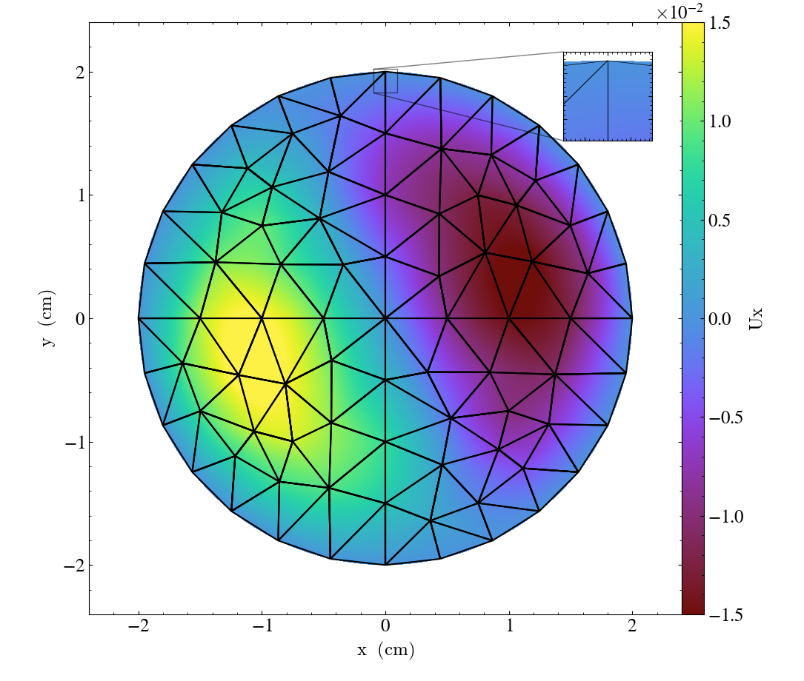
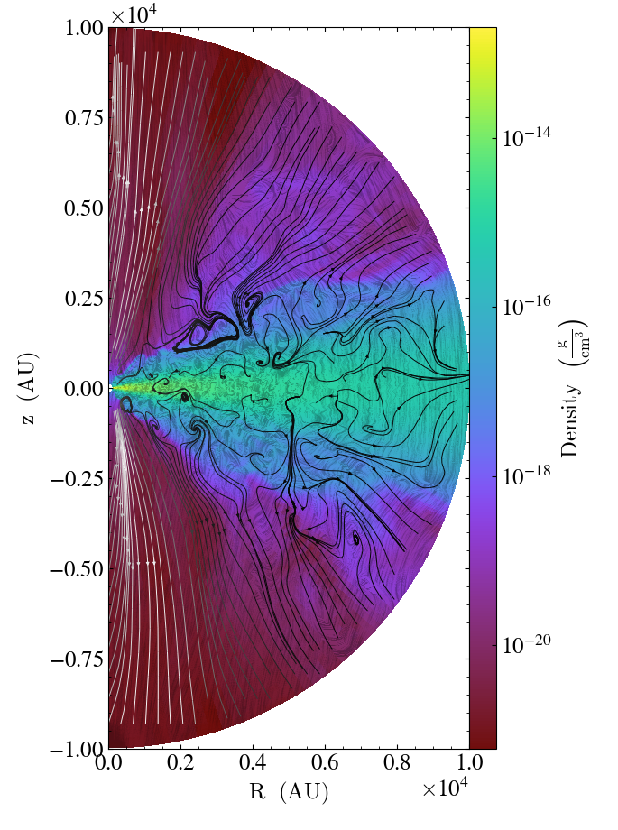

Matthew Turk✉ 0000-0002-5294-0198
· MatthewTurk
· @powersoffour@mastodon.social
School of Information Sciences, University of Illinois at Urbana-Champaign; Department of Astronomy, University of Illinois at Urbana-Champaign; National Center for Supercomputing Applications, University of Illinois at Urbana-Champaign
Nathan J Goldbaum 0000-0001-5557-267X
· ngoldbaum
· njgoldbaum
National Center for Supercomputing Applications, University of Illinois at Urbana-Champaign
Jared W. Coughlin 0000-0002-4373-4114
· jcoughlin11
National Center for Supercomputing Applications, University of Illinois at Urbana-Champaign
Corentin Cadiou 0000-0003-2285-0332
· cphyc
· cphyc
Department of Physics, division of Astrophysics, Lund University; Institut d’Astrophysique de Paris
Desika Narayanan 0000-0002-7064-4309
· dnarayanan
Department of Astronomy, University of Florida, 211 Bryant Space Sciences Center, Gainesville, FL 32611 USA; University of Florida Informatics Institute, 432 Newell Drive, CISE Bldg E251, Gainesville, FL 32611; Cosmic Dawn Center at the Niels Bohr Institute, University of Copenhagen and DTU-Space, Technical University of Denmark
Hsi-Yu Schive 0000-0002-1249-279X
· hyschive
Institute of Astrophysics, National Taiwan University, Taipei 10617, Taiwan; Physics Division, National Center for Theoretical Sciences, Taipei 10617, Taiwan
Shaokun Xie 0000-0001-5624-6008
· xshaokun
Shanghai Astronomical Observatory, Chinese Academy of Sciences; School of Astronomy and Space Sciences, University of Chinese Academy of Sciences
Jill P. Naiman 0000-0002-9397-6189
· jnaiman
School of Information Sciences, University of Illinois, Urbana-Champaign
Josh Borrow 0000-0002-1327-1921
· jborrow
Department of Physics, Kavli Institute for Astrophysics and Space Research, Massachusetts Institute of Technology, Cambridge, MA 02139, USA
Bili Dong 0000-0001-5081-9039
· qobilidop
Department of Physics, Center for Astrophysics and Space Sciences, University of California at San Diego
Benjamin Keller 0000-0002-9642-7193
· bwkeller
Department of Physics and Materials Science, University of Memphis
Benjamin Thompson 0000-0003-4383-9183
· cosmosquark
Jeremiah Horrocks Institute, University of Central Lancashire, Preston, Lancashire, PR1 2HE, UK; Institute for Computational Astrophysics, Dept of Astronomy & Physics, Saint Mary’s University, Halifax, BH3 3C3, Canada
· Funded by STFC PhD Studentship programme (ST/F007701/1)
Philipp Grete 0000-0003-3555-9886
· pgrete
University of Hamburg
· Funded by European Union’s Horizon 2020 (Marie Skłodowska-Curie grant agreement No 101030214)
John H. Wise 0000-0003-1173-8847
· jwise77
Center for Relativistic Astrophysics, School of Physics, Georgia Institute of Technology, Atlanta, GA 30332, USA
· Funded by NASA Grants 80NSSC20K0520, 80NSSC21K1053; NSF Grants OAC-1835213, AST-2108020
Shin-Rong Tsai 0000-0003-4635-6259
· cindytsai
Department of Physics, National Taiwan University; School of Information Sciences, University of Illinois at Urbana-Champaign
Nastasha Anna Wijers 0000-0001-6374-7185
· nastasha-w
CIERA and Department of Physics and Astronomy, Northwestern University, 1800 Sherman Ave, Evanston, IL 60201, USA
· Funded by CIERA Postdoctoral Fellowship
✉ — Correspondence possible via GitHub Issues
or email to
Matthew Turk <mjturk@illinois.edu>.
Abstract
We present the current version of the yt software package.
yt is an open-source, community-developed platform for analysis of volumetric data, with readers for several dozen data formats, indexing systems for gridded data, adaptive mesh refinement data, unstructured mesh data, discrete and particle formats, and octree-based data, as well as the combination of these.
We describe the systems implemented in yt to facilitate a “science-first” approach to data analysis, wherein the emphasis is on the meaning and interpretation of the data as opposed to its discretization or layout.
Authorship Policy
We note that the author list for this paper is, by design, extensive.
We have separated the authors into those that contributed to the text (whose names are ordered somehow TBD) and those that are members of the yt community.
The authors from each group have been indicated in the respective author affiliations.
This paper was developed collaboratively, using the Manubot [1] system for collaborating on and reviewing contributed text.
To add yourself to the author list, please follow the instructions in our
README.
Introduction
The process of transforming data into understanding constitutes the vast majority of time, energy, and intellectual effort spent during scientific inquiry.
This is true across domains, whether data is the product of a computational simulation, a telescope observation, the synthesis of sensors distributed across the Earth, or a collection of images of the human brain.
Data, by themselves, do not reflect an understanding of the Universe or its underlying physical properties; rather, they are recordings, or measurements, of the state of systems as observed.
Even for computational simulations, such as simulations of star formation in the galaxy, this is true: these simulations encode information about a discretization of a model, rather than the model itself.
Bridging the gap between this discretization and the physical understanding requires accessing data, manipulating and interrogating this data, and then applying to this data a sense of understanding.
Somehow, bits stored on a disk must become, in our minds, a galaxy undergoing a starburst.
This process is both mediated and impeded by computational tools.
When those tools align with our mental model of how data exists, they can allow us to work more efficiently, asking questions of data and building sophisticated scientific inquiry.
However, when they do not, they can cause frustration, delays, and most worryingly, incorrect or misinterpreted results.
When viewing this from the perspective of the landscape of inquiry, the most startling realization is that the questions a computational tool enables individuals to ask shapes the questions they think to ask.
In [2], the analysis platform yt was described.
At the time, yt was focused on analyzing and visualizing the output of grid-based adaptive mesh refinement hydrodynamic simulations; while these were used to study many different physical phenomena, they all were laid out in roughly the same way, in rectilinear meshes of data.
In this paper, we present the current version of yt, which enables identical scripts to analyze and visualize data stored as rectilinear grids as before, but additionally particle or discrete data, octree-based data, and data stored as unstructured meshes.
This has been the result of a large-scale effort to rewrite the underlying machinery within yt for accessing data, indexing that data, and providing it in efficient ways to higher-level routines, as discussed in Section Something.
While this was underway, yt has also been considerably reinstrumented with metadata-aware array infrastructure, the volume rendering infrastructure has been rewritten to be more user-friendly and capable, and support for non-Cartesian geometries has been added.
The single biggest update/addition to yt since that paper was published has not been technical in nature.
In the intervening years, a directed and intense community-building effort has resulted in the contributions from over a hundred different individuals, many of them early-stage researchers, and a thriving community of both users and developers.
This is the crowning achievement of development, as we have attempted to build yt into a tool that enables inquiry from a technical level as well as fosters a supportive, friendly community of individuals engaged in self-directed inquiry.
Community Building
Choosing a software package for a particular purpose involves evaluating several differentiating factors; these factors include the functionality of a package, the performance of a package, the user-friendliness, and even the ability of an individual to find help, engage with others and feel a sense of participation [3].
The development, fostering and design of the community around yt is deemed to be both crucial to the success or failure of yt, and in many ways inseparable from its functionality.
Composition
There are several rough categories of individuals engaged in development and utilization of yt.
As a result of its API-first design, there are few if any individuals who use yt that do not do so through the scripting interface; this means that the vast (if not exclusive) majority of individuals who interact with the functionality in yt are doing so by writing their own scripts, modules, and code, and arguably engaging in a value-added development process of their own.
The majority of individuals using yt at present are in astronomy and astrophysics, typically fields of simulation, although representatives from other domains are increasingly participating in development and using yt for their own domain-specific problems
Making the distinction somewhat more clearly, there are individuals who have built their own scripts and utilized them as well as individuals who have contributed changes or modules to the primary yt codebase.
In addition, there is an emerging set of projects that build on yt as infrastructure to conduct scientific analysis.
These developers are largely driven by their own pragmatic scientific needs, and they constitute the majority of developers (by number) that contribute to the code base.
The majority of these individuals are early- to mid-career researchers, typically graduate students, postdocs, and assistant professors.
In recent years, there has emerged a more coherent contingency of individuals who participate in both pragmatically-focused development of modules and functionality for their own benefit as well as modules or overall improvement that is supplemental or even external to their own research agenda.
Sections of the code base receiving such improvements include unit handling, plotting code, infrastructure for loading disparate datasets, and so on.
At this time we do not know of any individuals funded to work on yt completely independent of a scientific or scholarly goal.
The composition of the community, particularly with a mixture of timelines for goal-setting and completion, can at times cause frustrations and difficulties.
For instance, the response to “Can this feature be implemented?” often includes an invitation for the questioner to collaborate on developing that feature and submitting it to the codebase.
Developing a schedule of releases is an act of consensus building, both deciding what bugs are critical to fix in the timeline of a release as well as building consensus on what features should be considered blockers for a new release.
The intersection of this with academic deadlines (for instance job application season) requires balance and care.
Types of Tasks
When evaluating the level of engagement, we consider a few different classifications of tasks that are performed by individuals in the community, and evaluate these based on how they flow into greater engagement.
Filing issues
Participating in mailing list discussions
Issuing a pull request
Writing documentation
Participating in code review
Closing bug reports
Drafting an enhancement proposal
While there are other activities that individuals can participate in, these are the typical activities we see among participants in the community.
The order, flowing from the first to the last, is the typical flow we see for an individual coming to participate in the community.
The first step is typically to file an issue or bug report (occasionally these are requests for new features), followed by participating in development-focused discussion on mailing lists.
The next level of engagement typically involves the development of a new piece of functionality, refinement of existing code, or issuing a fix for a bug or issue.
These take the form of pull requests (described in greater detail here) that can be reviewed and added to the code base.
The next level of engagement centers around tasks that are not fully-aligned with pragmatic, code-driven scientific inquiry.
The development of documentation is often viewed as orthogonal to the scientific process, and typically requires an iterative writing process.
Participation in code review, providing comments, feedback and suggestions to other authors, is another somewhat orthogonal task; it doesn’t necessarily directly benefit the developer doing the reviewing (although it might) and it does not necessarily result in academic rewards (citations, authorship, etc).
But, it does arise from a pragmatic (ensuring code reliability) or altruistic (the public good of the software) motivation, and is thus a deeper level of engagement.
The final two activities, drafting enhancement proposals and closing bug reports, are the most engaged, and often the most removed from the academic motivation structure.
Developing an enhancement proposal for yt means iterating with other developers on the motivation behind and implementation of a large piece of functionality; it requires both motivation to engage with the community and the patience to build consensus among stakeholders.
Closing bug reports – and the development work associated with identifying, tracking and fixing bugs – requires patience and often repeated engagement with stakeholders.
Engagement Metrics
We include here plots of the level of engagement on mailing list discussions and the citation count of the original method paper.
Project Governance
Between the publication of the first paper and this paper, the yt project instituted a form of governance involving a steering committee, a set of “members” of the project, and a defined process for developing improvements and enhancements (the YTEP, or yt-enhancement-proposal process).
YTEPs are discussed in 1.4.6.
The systems developed account for a number of important procedures, mostly related to decision-making, but do not address pressing community needs such as community standards for conduct, changes in committee composition, sub-project coordination, or the transition of members and developers to “emeritus” status.
This governance structure, however, serves as a process for the ytproject, rather than just the software itself.
Much like other software projects with community-building as core goals, the yt project encompasses the core package itself (largely the subject of this paper), affiliated software projects (such as [4] ) but also, crucially, the broader community and the spaces in which discussions, tutorials, inquiries and development take place.
As such, the governance structure was designed to be more holistic than addressing so-called “Commit Privileges” and access control.
There are several components of the yt governance structure that we highlight here, but direct the interested reader to our governance source repository for a more detailed understanding.
Conflicts of Interest
yt project development is distributed across universities and organizations, where in some cases different members of the development team may find themselves collaborating, or even applying for similar funding or academic positions.
To minimize real or perceived conflicts of interest among the community, a policy regarding conflicts of interest is applied to members of the yt steering committee.
It is expected that the Steering Committee Members will be
employed at a wide range of companies, universities and non-profit
organizations.
Because of this, it is possible that Members will have conflict
of interests.
Such conflict of interests include, but are not limited to:
Financial interests, such as investments, employment or contracting work, outside of The Project that may influence their work on The Project.
Access to proprietary information of their employer that could potentially leak into their work with the Project.
All members of the Steering Committee shall disclose to the rest of the Council any conflict of interest they may have.
Members with a conflict of interest in a particular issue may participate in Committee discussions on that issue, but must recuse themselves from voting on the issue.
This also addresses the possibility of funded work conflicting with the development of yt as a whole, or project wellness.
As of the time of writing, this policy has not been exercised, but providing it in writing will ensure that the conduct of the steering committee is appropriate.
Project Members and Groups
Individuals interact with projects in different ways at different times; as careers progress and personal lives shift, the degree of engagement that one can expect will change as well.
To reflect this, as well as to codify the different means by which people can participate in the community, the yt governance structure allows for “members” to transition between different levels of activity.
The base level of “membership” in the yt project is that of “project members.”
This is, by design, a broad category of individuals who have demonstrated their willingness to participate in the community, either through participating in community discussions, helping other members, contributing code or documentation, or reviewing the contributions of others.
The initial seed of the project members was chosen by a flat cutoff of 50 changesets included in the repository; since that time, members are nominated by other members and must receive at least three positive votes.
This membership, unless either explicitly revoked (via five supporting member votes and a steering council vote) lasts for life, although may be transitioned into “emeritus” status.
Within the “members” group, a set of several sub-groups are identified that follow a rough, orchard-like metaphor.
The first of these groups is the fertilizer group.
(We whimsically note that the choice of name is not meant as a value judgment!)
This is the high-level organizer group, including the steering committee and any other leadership roles.
This group tends to the growth of the community, ensuring that there are opportunities for new members, and that the project continues as expected.
Explicitly identified in the governance structure is that this is a group meant to train new members and to facilitate its membership to grow and change over time.
The arboretum is the largest group, and is the starting point for new members of the project.
The arboretum includes all project members and steering committee members.
This group facilitates and develops contributions to the code base, encouraging diversity of participation.
The greenhouse group includes those new members of the project, who are still developing their participation but have contributed to the community (for instance with a bug fix or documentation enhancement.)
Members of the greenhouse group do not necessarily have high-level project responsibilities, but are encouraged to seek involvement and participate in triage meetings and other discussions.
In recognition that temporary obligations, changes in activity level and other interest migrations happen, there is a group entitled the fallow fields for members who wish to temporarily step back from their responsibilities.
Many different reasons exist for stepping into the fallow fields – burnout, new or enhanced work responsibilities, family or care duties, or even simply a desire to do other things.
Transitioning to the fallow fields is not permanent, and participation in the project can either resume or the individual can choose to move on.
Finally, we have designated a class of project members as emeritus (the only non-orchard name utilized!) for individuals who have moved on to other interests or activities.
The yt project has had a number of individuals and contributors who have later gone on to work in industry or non-profits, or who simply have opted to leave the community.
The emeritus designation is a manner by which their previous contributions can still be recognized and honored, while also recognizing that they are no longer active participants.
Decision Making
The majority of decisions in the yt project are small, day-to-day decisions about code quality, merging pull requests, how to respond to questions and other items for which it is typically quite easy to identify a consensus.
For those situations where consensus is not possible, deciding upon and implementing a course of action can be one of the more difficult issues in a project; members of the community each bring their own preferences, requirements, needs and desires to a project.
These decisions might be regarding the future of specific areas of the project’s code base – for instance, “should the software volume rendering be split into a separate repository?” or “how should we decide the line to draw for excising old frontends?”
Typically, the YTEP process is sufficient, even in cases where a consensus cannot be reached, as it allows a large amount of discussion.
In cases where it cannot, the decision making process utilizes a multi-tier system of votes, including the YTEP and mailing list as venues.
If a 2/3 majority is unable to be reached, the steering committee is allowed approximately a month to identify a consensus among themselves; failing this, a majority vote will be reached.
While the full mechanism of the yt project decision making process has not been exercised in its entirety, its presence has provided a “safety net” for discussion.
For further details, the voting process section of the governance documents lay out the steps, involved groups and timeline.
Development Procedure
yt is developed openly.
During the Spring of 2017, development transitioned from occurring on Bitbucket to GitHub, and the source code management system was changed from Mercurial to git.
Development occurs through the “pull request” model, wherein changes to the codebase are made and then requested to be included in the primary repository.
Typically, there are two branches of development, and occasionally three. The first of these is the “stable” branch, which is much slower-paced, and typically only modified during the release periods.
The second is that of “main” (formerly “master”, which is the conventional term in git terminology, and renamed in early 2021; the corresponding mercurial term would be “default”) which is where current development takes place.
The “main” branch is meant to be for development proceeding that does not drastically disrupt usage patterns.
Occasionally, such as during the development of yt 4.0, a third branch is included in the primary repository.
This development branch is open for large and potentially disruptive changes, but in order to centralize code review and developer attention it takes place there.
For instance, during the development of yt 4.0, the branch yt-4.0 was where the global mesh was removed and where the units subsystem was removed and replaced with unyt.
This three-pronged approach generally has suited the community; the process of backporting changes from the “main” branch to the “stable” branch can be time-consuming.
However, balancing the needs of a community requiring stable methods for analyzing data against the ease of development suggests that this is a toll worth paying.
In general, the development of yt is reasonably top-heavy, with the majority of contributions coming from a core group of individuals.
We discuss the implications of this on sustainability in Section 1.19, and provide here a graph of the contributions over time.
Of particular note is that the development history of yt is also highly bifurcated between version control systems and developer practice.
In the past, yt developers tended to commit frequently and include all of the individual development history of individual features or bug fixes.
Recent practice, however, is more inclined toward commit “squashing,” where multiple commits are combined into a single commit with the same net effect, or commit rebasing, where changes are included linearly rather than through a branched history.
One result of this is in figures such as the top row of Figure 1, some contributors appear to have made a smaller quantity of contributions than an informed observer would recognize.
Specifically, this applies to Clément Robert, who has contributed a considerable amount of change to the code base but has done so in a way that does not maximize the “statistics” presented below.
This particular bias, toward contributions measured in count, is one that affects other members of the community as well, especially those whose participation is through community engagement, documentation, tutorials, and mentoring, rather than through direct modifications of the code base.
To mitigate this shortcoming, we present the number of pull requests merged into the code base, as a function of time, as well as the time between their creation and their merge, in the lower row of Figure 1.
This demonstrates that in many cases, the number of discrete contributions to the codebase varies greatly depending on the developer, and we believe gives a more informed perception of the activity in the code base.
Figure 1: Commits and pull requests to the source code as a function of time.
In Figure 2 we have plotted distribution of pull requests based on the time between their creation and their merge.
The longest time between opening a pull request and merging it was nearly four years; this was the addition of the cf_radial frontend, which occurred in fits and starts over a very long period of time.
The next longest pull request durations are for splitting the code used for bitmap indexing (see 1.9) and a per-field configuration system.
This includes only those pull requests that occurred on GitHub.
Figure 2: The distribution of pull requests as a function of how long it took to close them.
Unit Testing
The yt codebase includes a number of unit tests; although extensive, their existence post-dates the initial development of the code, and they largely work around the extant APIs at the time of their creation.
Most modern recommendations for developing scientific software emphasize isolated components, well-structured interfaces, and few side effects.
While the development process attempts to emphasize development of isolated APIs and well-constrained unit tests, the balance struck between enabling contribution from junior developers and ensuring the (subjective) standards of the code base does not always fall on the side of rigid design.
Many of the yt APIs that are tested require the existence of a “dataset.”
For instance, the testing of whether objects are correctly selected by a sphere selector (which absolutely could be tested in isolation, were the APIs more separable) is done via creating several different sets of mock datasets of different organizations and shapes and testing whether or not they correctly choose the data points to be included.
To support these operations, the yt testing utilities provide helper functions for creating mock datasets that have different geometric configurations and different collections of “fields” included in their set of primitive values.
Many of the tests are parameterized against the types and organizations of the datasets, the decomposition across mock processors, and the underlying values of the fields.
This ensures that we check against errors and bugs that may depend on behavior that varies as the number of processors or the organization of the data changes.
One example of this would be in the selection of grid values for a single grid of size \(128^3\).
The values selected in this should match the values selected in the same grid decomposed into eight sets of \(64^3\) cells, or 64 sets of \(32^3\) cells.
The mechanism by which fields are tested is somewhat more extensive, touching on two different needs.
The first need is that of accuracy – fields with known answers, or fields that can be written to be decomposed into primitive, non-optimized operations, are tested for correctness.
The second need is that of dependency calculation; all fields should have their dependencies correctly detected.
For example, if a dataset has primitive fields for “mass” and “velocity,” the calculation of momentum should require both.
If the dataset includes a “momentum” field, then that should be detected as well.
This dependency calculation enables yt to consolidate IO tasks and read as much data as possible in each pass over the full dataset.
In addition to this, fields are tested to ensure that the values generated for them are independent of the organization of the dataset.
Like in the example above, the “momentum” field for a fixed set of values should be identical regardless of the decomposition of the individual cell elements.
Wherever possible, analytical solutions are preferred.
For processes like surface extraction, this might include ensuring that fixed radii extraction produce the correct spherical region.
For streamlines, it might include computing the analytical solution to an integration along a known vector field.
And for projections, it would mean that integrating the path with a weight of “one” should result in a uniform set of values equal to the path length across the domain.
At present, the unit tests in yt take a considerable amount of time to run, and are using the nosetests framework. Modern Python practice is to use the newer pytest framework, and efforts are underway to port yt to utilize pytest, and in the process, attempt to reduce overall runtime.
Answer Testing
The most time-consuming part of the testing process is what we refer to as “answer testing.”
Because so much of yt is focused on computing analysis results, and because some of these analysis results simultaneously depend on specific IO routines, selection routines, and many “frontend-specific” pieces of code, we have built a system for ensuring that for a given set of analysis operations, the result of a set of operations does not change beyond a fixed (typically quite small) tolerance.
In general, we allow three different classes of answers, against which we compare results from the current version of the code:
Data values which should not ever change unless an explicit decision is made (i.e., raw data values accessed from on-disk fields)
Lightly-processed data values which we do not anticipate any deviation from exact, ordered values (i.e., averages, extrema, etc.)
Higher-level processed values which may differently accumulate error across platforms and architectures but are still within fine-grained (\(\equiv 10^{-7}\)) tolerance (i.e., images, pixelized projections, etc.)
In the first case, we can utilize hashing functions (such as MD5 and SHA) to guarantee consistency across executions.
Typically, however, we store the full set of values to facilitate easy comparison.
In the latter two cases, we apply unit-aware relative tolerances.
This allows for changes in unit assignment to be isolated from changes in value, and furthermore allows minor migration of values.
A recent incident in which these tests needed to be changed resulted from minor differences as a result of consolidating operations within a loop to conserve memory; the code in question was converted to Cython and the drift was on the scale of \(10^{-10}\).
For small-scale answer tests, results are stored in a separate repository that is cloned as a subrepository of the principle yt repository.
When a new set of answers are needed, they are submitted via pull request, and the changeset hash used for answer validation is updated in the main repository.
This allows a different cadence, and also enables individuals not interested in updating answer values to avoid cloning the subrepository and its full history.
Larger dataset answers are stored in on our continuous integration servers; a YAML file in the main yt repository stores the current version number for those answers, which is incremented (via a pull request) when needed.
Requiring this clear decision-making process allows for both collaborative discussion and community governance over the degree of answer drift allowed.
Code Review
Code review in yt is conducted on a line-by-line basis, as well as on a higher-level regarding pull requests.
The workflow for code review roughly follows this outline:
A pull request is issued. When a new pull request is issued, a template is provided that includes a description of the change, requesting information about its compliance with coding standards, etc.
The pull request is automatically marked as unmergeable until a team member applies the correct component label.
Code is reviewed, line-by-line, and suggestions are made by humans. Code linting, where specific behaviors are identified (such as inconsistent naming, unused variables, unreachable code sections, etc) is automated.
This process is iterated, ensuring that tests, results accuracy and coding standards are maintained.
One increasing issue with the code review process is ensuring that changes are reviewed with appropriate urgency; larger pull requests tend to languish without review, as the requirements for review necessarily add burden to the maintainers.
“Bugfix” changes formally require only one reviewer, whereas the yt guidelines suggest that larger changes require review from two different team members.
One of the most pressing bottlenecks with code review is that the time it takes for tests to pass is much longer than the typical time span during which code review takes place.
Because tests are often required to be run on the current version of the code, not the version of the code against which the pull request has been issued, they are often re-initiated following a merge.
This results in a pull request being merged, and then whatever pull request is next to be reviewed has to wait until the tests (now updated with the newly accepted pull request) pass.
To alleviate this, we have recently begun utilizing the “auto-merge” feature provided by GitHub.
This allows a maintainer to mark a pull request as “queued” to be merged once a set of requirements – such as tests passing, approval messages, comment resolution and so forth – are met.
By queuing up pull requests for merging, it allows maintainers to mark a set of pull requests as ready to be merged, and then when they meet the appropriate (automated and asynchronous) criteria, they will be merged.
Code Styling and Linting
For code included in yt, a set of styles are enforced.
The term “linting” is used to describe applying automated checks to enforce sytlistic consistency, as well as to flag potential errors that can be detected through static analysis of the code.
We rely on the pre-commit framework, which enables automated checks as well as automatic fixes at commit time.
This tool is an opt-in so not every “drive-by” contributor has to learn and install it, but continuous linting is provided by pre-commit.ci so styling errors cannot slip in.
We configure pre-commit to run a mixture of formatters and static checkers.
The former modify the code in place, while the latter only report errors and so-called “code smells” (such as undefined variables, unused imports, bare except statements…) but require human developers fix them.
Our suite of formatter most prominently includes
black,
isort and
pyupgrade.
black has been designed to maximize readability with as few free parameters as possible
(In many ways, the fact that most of the yt code developers did not utilize this style before it was enforced likely enabled its uptake, as it was seen as a choice that “made everyone compromise.”),
while isort ensures that all import statements are sorted (according to alphabetical order within a first/second/third-party categorization), and pyupgrade modernizes some Python idioms according to our minimal support version of the language.
In particular, pyupgrade enforces the usage of modern Python “f-strings” since we do not support Python version older than 3.6.
For static code analysis we rely on the flake8 framework.
Effort is underway to enable using mypy for the specialized task of type checking.
All changes that can be applied via automation (specifically, code formatting) are accessible from within the GitHub pull request interface, and are again provided by pre-commit.ci.
This allows drive-by contributions to have their pull requests updated inline by an automated process, reducing the need to manually install packages to apply the changes.
We note that in [5] evidence is presented that code review bots can lead to a reduction in rejected pull requests, as well as decreased communication among developers.
While yt is not necessarily the perfect laboratory for this, as the project as a whole does not have an extensive history of declining pull requests, we have anecdotally noted that discussion around ‘code nits’ and stylistic issues has been considerably reduced, leading to what developers describe as expedited pull requests.
Type Hinting
Code included in yt is not required to utilize type hinting.
However, new contributions are allowed to include type hinting, and work is underway to develop an ontology of types as well as a base set of utilities and types that would be used both internally, and possibly be made available to external package developers.
YTEP Process
YTEPs, or “yt-enhancement proposal” are vehicles for collaborative decision-making in the project.
During periods of rapid development, the needs of the community for stability have to be balanced against desires for change; the YTEP process was implemented to facilitate stakeholder feedback, allow for discussion of design decisions, and to prompt detailed thinking about how and why things should be implemented.
We have modeled this process against that used in the AstroPy community (“APE”).
To create a new proposal for a large change to yt, or to document a decision-making process, individuals prepare a description of the background, motivation for the change, the steps to implementation, and potential alternative approaches.
The proposal is discussed through the pull-request process, and once discussion has concluded it is added to the repository of YTEPs that is auto-built and deployed.
Implemented shortly after the first paper on yt was released, the YTEP process experienced a fairly pronounced period of usage during the transition between versions 2.0 and 3.0 of yt, and has since been utilized considerably less.
The accepted YTEPs have included implementing the chunking system, developing a units system, removing legacy components, and implementing a code of conduct.
Below, we include a table of current YTEPs as of this writing.
Number
YTEP Title
Created
Authors
0001
IO Chunking
November 26, 2012
Matthew Turk
0002
Profile Plotter
December 5, 2012
Matthew Turk
0003
Standardizing field names
December 11, 2012
Casey Stark, Nathan Goldbaum, Matthew Turk
0005
Octrees for Fluids and Particles
December 24, 2012
Matthew Turk
0006
Periodicity
January 10, 2013
Matthew Turk, Nathan Goldbaum
0007
Automatic Pull Requests’ validation
February 21, 2013
Kacper Kowalik
0008
Release Schedule
February 21, 2013
Matthew Turk
0009
AMRKDTree for Data Sources
February 28, 2012
Sam Skillman
0010
Refactoring for Volume Rendering and Movie Generation
March 3, 2013
Cameron Hummels
0011
Symbol units in yt
March 7, 2013
Nathan Goldbaum, Casey Stark, Anna Rosen, Matthew Turk
0012
Halo Redesign
March 7, 2013
Britton Smith, Cameron Hummels, Chris Moody, Mark Richardson, Yu Lu
0013
Deposited Particle Fields
April 25, 2013
Chris Moody, Matthew Turk, Britton Smith, Doug Rudd, Sam Leitner
0014
Field Filters
July 2nd, 2013
Matthew Turk
0015
Transfer Function Refactor
August 13, 2013
Sam Skillman
0016
Volume Traversal
September 10, 2013
Matthew Turk
0017
Domain-Specific Output Types
September 18, 2013
Matthew Turk and Anthony Scopatz
0018
Changing dict-like access to Static Output
September 18, 2013
Matthew Turk
0019
Reduce items in main import
October 2, 2013
Matthew Turk
0020
Removing PlotCollection
March 18, 2014
Matthew Turk
0021
Particle-Only Plots
August 29, 2014
Andrew Myers
0022
Benchmarks
January 19, 2015
Matthew Turk
0023
yt Community Code of Conduct
July 11, 2015
Britton Smith
0024
Alternative Smoothing Kernels
August 1, 2015
Bili Dong
0025
The ytdata Frontend
August 31, 2015
Britton Smith
0026
NumPy-like Operations
September 21, 2015
Matthew Turk
0027
Non-Spatial Data
December 1, 2015
Matthew Turk, Nathan Goldbaum, John ZuHone
0028
Alternative Unit Systems
December 8, 2015
John ZuHone, Nathan Goldbaum, Matthew Turk
0029
Extension Packages
January 25, 2016
Matthew Turk
0031
Unstructured Mesh
December 18, 2014
Matthew Turk
0032
Removing the global octree mesh for particle data
February 9 2017
Nathan Goldbaum, Meagan Lang, Matthew Turk
0033
Dropping Python2 Support
November 28, 2017
Nathan Goldbaum
0034
yt FITS Image Standard
September 9, 2018
John ZuHone
0036
Migrating from nose to pytest
September 30, 2019
Jared Coughlin
0037
Code Styling
May 18, 2020
Clément Robert
1000
GitHub Migration
March 25, 2017
Lots of folks
1776
Team Infrastructure
August 24, 2014
Britton Smith
3000
Let’s all start using yt 3.0!
October 30, 2013
Matthew Turk
Indexing and Geometry
yt is designed for analysis and visualization of datasets that describe “natural” or “physical” phenomena; more generally, yt is designed to analyze data that can be characterized by a metric of some type.
The most common use case, by far, is that of data that is described in a Cartesian space, by the orthogonal axes of x, y and z.
However, for reasons related to naturalness of coordinate systems and relevance to physical phenomena, datasets are also frequently organized in other coordinate systems, such as cylindrical polar (\(r\), \(z\) and \(\theta\)), spherical (\(r\), \(\theta\) and \(\phi\)) and variants such as geographic (latitude, longitude and altitude).
Importantly, however, yt distinguishes between the coordinate space a dataset describes and the natural or index space by which its organization is described.
This distinction is the most relevant among datasets and data formats where the organization is implicit, rather than explicit; for instance, in a grid patch dataset, data variable locations are often only specified implicitly.
For a grid volume that covers a given region, the relationship between the “index” value of a cell (for instance, \(i,j,k\)) and its position in space (for instance, \(x, y, z\) or \(r, \theta, \phi\)) requires transformation between a logically-Cartesian decomposition of the space and the potentially-non Cartesian space that it represents.
In Figure 3 we demonstrate one possible mapping.
We note that the specific data layout is not optimized for IO throughput, and is unlikely to be exactly replicated in real world formats.
In this case, the data points may be laid out sequentially on disk (or in memory) and a mapping function translates these into position and extent in the coordinate system, here cylindrical coordinates.
For instance, there may be a cell that spans \(r\) from 0.375 to 0.5 and
\(\theta\) from 45.0 to 52.5, which is defined by the array values defined in cell 1, 4.
Figure 3: Index space to coordinate space mapping. On the left is an example of how data points may be laid out on disk and on the right is how these points might be translated into a (cylindrical) coordinate space.
Abstraction of Coordinate Systems
yt provides a system for defining relationships between index-space and coordinate-space.
During instantiation of a Dataset object, a helper object (coordinates, a subclass of CoordinateHandler) is created.
This helper object tracks the correspondence between numerical axes and spatial axes (for instance, even in some Cartesian datasets, axis 0 corresponds to \(z\) rather than \(x\)), the names of axes, and the transformation and pixelization methods for visualization.
In addition to these helper functions, the coordinate handler provides definitions for derived fields that describe local cell width (and orthogonal path length), positions in coordinate space as computed by index space coordinates, volumes, and surface areas.
These coordinate handlers also provide transformations between different spaces, albeit using the somewhat undesirable method of conversion to reference cartesian frames and subsequent conversion to local coordinate frames.
At present, coordinate spaces are defined in the spaces enumerated in Table 1.
While these are representative of the most common spatial representations, additional representations (such as those that include a non-trivial mapping between coordinates and index values) are possible to implement.
Table 1: Extant coordinate systems; in all cases, value ranges should be taken to describe extent rather than specific boundary points.
Coordinate system
Axes
Cartesian coordinates
\(x, y, z\)
Cylindrical polar coordinates
\(r, \theta \in [0, 2 \pi], z\)
Spherical coordinates
\(r, \theta, \phi\)
Geographic coordinates
latitude \(\in [0, 180]\), longitude \(\in [0, 360]\), altitude
Internal geographic coordinates
latitude, longitude, depth
Spectral cube
Image \(x\), Image \(y\) and \(\nu\)
Future developments may involve code generation for arbitrary coordinate systems, using SymPy or other libraries.
Independent of the visualization methods (which can often be reused), the development of coordinate systems is largely rote, applying straightforward mathematics to construct derived field definitions.
As such, using mechanisms in SymPy for construction of relationships between coordinate systems may be a feasible method of developing code-generation for coordinate system handlers in yt.
Data Objects
The basic principles by which yt operates are built on the notion of selecting data (through coarse and subsequent fine-grained indexing of data sources such as files), accessing that data in a memory-efficient fashion, and then processing that data into either a resultant set of quantitative data or a visualization.
Selections in yt are usually spatial in nature, although several non-spatial mechanisms focused on queries can be utilized as well.
These objects which conduct selection are selectors, and are designed to provide as small of an API as possible, to enable ease of development and deployment of new selectors.
Selectors require defining several functions, with the option of defining additional functions for optimization, that return true or false whether a given point is or is not included in the selected region.
These functions include selection of a rectilinear grid (or any point within that grid), selection of a point with zero extent and selection of a point with a non-zero spherical radius.
The base selector object utilizes these routines during a selection operation to maximize the amount of code reused between particle, patch, and octree selection of data.
These three types of data are selected through specific routines designed to minimize the number of times that the selection function must be called, as they can be quite expensive.
Selecting data from a grid is a two-step process.
The first step is identifying which grids intersect a given data selector; this is done through a sequence of bounding box intersection checks.
Within a given grid, the cells which are intersected are identified.
This results in the selection routine being called once for each grid object in the simulation and once for each cell located within an intersecting grid.
This can be conducted hierarchically, but due to implementation details around how the grid index is stored this is not yet cost effective.
Selecting data from an octree-organized dataset utilizes a recursive scheme that selects individual oct nodes, then for each cell within that oct, determining which cells must be selected or child nodes recursed into.
This system is designed to allow for having leaf nodes of varying cells-per-side, for instance 1, 2, 4, 8, etc.
However, the number of nodes is fixed at 8, with subdivision always occurring at the midplane.
The final mechanism by which data is selected is for discrete data points, typically particles in astrophysical simulations.
At present, this is done by first identifying which data files intersect with a given selector, then selecting individual points.
There is no hierarchical data selection conducted in this system, as we do not yet allow for re-ordering of data on disk or in-memory which would facilitate hierarchical selection through the use of operations such as Morton indices.
Selection Routines
Given these set of hierarchical selection methods, all of which are designed to provide opportunities for early-termination, each geometric selector object is required to implement a small set of methods to expose its functionality to the hierarchical selection process.
Duplicative functions often result from attempts to avoid expensive calculations that take into account boundary conditions such as periodicity and reflectivity unless necessary.
Additionally, by providing some routines as options, we can in some instances specialize them for the specific geometric operation.
select_cell(cell_center, cell_width): this function, which is somewhat degenerate with select_bbox, returns whether a given “cell,” defined by its center and its width along each dimension, is included within the selection. In situations where the cells are spaced logarithmically, rather than linearly, this may produce slightly reduced accuracy for near-misses and glancing-selections.
select_point(position): this function returns whether or not a point of zero-extent is included within the selection. This has some degeneracy with select_sphere.
select_sphere(position, radius): This is equivalent to the select_point function, except that any point within the specified radius is included within the selector object.
select_bbox(lower_left, upper_right): Determine overlap with an axis-aligned bounding box. Particularly for hierarchical selection methods, determining whether or not a bounding box overlaps with a geometric selector can lead to early-termination of some selection operations.
select_bbox_edge(lower_left, upper_right): This is a special-case of the bounding box routine that provides information as to whether or not the entire bounding box is included or just a partial portion of the bounding box.
We demonstrate a handful of selection operations on a low-resolution dataset below.
In each of these figures, the rectangular regions outlined in gray and black indicate individual grid patches, where data may vary in resolution and cell size.
In Figure 4 we illustrate the selection of a rectangular prism (i.e., a region, like in Section 1.6.2.17.
In Figure 5, we illustrate the selection of a sphere (i.e., a sphere, like in Section 1.6.2.20.
And, to demonstrate yt’s ability to construct boolean selectors from these objects (i.e., Section 1.6.2.2 we show what the logical NOT of these two objects would produce in 6.
We note in particular that while these regions are constructed from geometric selections, the data points are selected by the inclusion of their center points, leading to slightly irregular edges; this is by design.
Figure 4: A selection of data in a low-resolution simulation from a rectangular prism.
Figure 5: A selection of data in a low-resolution simulation from a sphere.
Figure 6: The logical A AND NOT B for regions A and B from Figures 4 and 5 respectively.
Fast and Slow Paths
Given an ensemble of objects, the simplest way of testing for inclusion in a selector is to call the operation select_cell on each individual object.
Where the objects are organized in a regular fashion, for instance a “grid” that contains many “cells,” we can apply both “first pass” and “second pass” fast-path operations.
The “first pass” checks whether or not the given ensemble of objects is included, and only iterates inward if there is partial or total inclusion.
The “second pass” fast pass is specialized to both the organization of the objects and the selector itself, and is used to determine whether either only a specific (and well-defined) subset of the objects is included or the entirety of them.
For instance, we can examine the specific case of selecting grid cells within a rectangular prism.
When we select a “grid” of cells within a rectangular prism, we can have either total inclusion, partial inclusion, or full exclusion.
In the case of full inclusion, where the entire grid is included within the selector, we simply sidestep the specific inclusion checks completely and return a full mask of cells to utilize.
In the case of partial inclusion, we can often determine the “start” and “end” indices of inclusion in the rectangular prism by examining the intersection volume.
This allows us to avoid many costly individual select_cell calls.
With discrete point selection (and for our purposes, often unstructured mesh falls into this category) we often do not have the same organizing principle on which we can rely.
However, utilizing hierarchical bitmap indexing we can often organize subsets of particles into collections of cells which may or may not be contiguous.
In this situation, we can check for full inclusion within data objects, although we are not able to identify start and stop indices as the data are not assumed to be organized spatially independent of how we have indexed them.
At present, the objects listed in Table 2 are provided as selectors in yt.
We do make a distinction between “selection” operations and “reduction” or “construction” operations (such as projections and smoothing/resampling), but have included both here for consistency.
Additionally, some have been marked as not “user-facing,” in the sense that they are not expected to be constructed directly by users, but instead are utilized internally for indexing purposes.
In columns to the right, we provide information as to whether there is an available “fast” path for grid objects.
Table 2: Selection objects and their types.
Object Name
Object Type
Arbitrary grid
Resampling
Boolean object
Selection (Base Class)
Covering grid
Resampling
Cut region
Selection
Cutting plane
Selection
Data collection
Selection
Disk
Selection
Ellipsoid
Selection
Intersection
Selection (Bool)
Octree
Internal index
Orthogonal ray
Selection
Particle projection
Reduction
Point
Selection
Quadtree projection
Reduction
Ray
Selection
Rectangular Prism
Selection
Slice
Selection
Smoothed covering grid
Resampling
Sphere
Selection
Streamline
Selection
Surface
Selection
Union
Selection (Bool)
Arbitrary grid
Arguments:
Left edge
Right edge
Active Dimensions
A 3D region with arbitrary bounds and dimensions. In contrast to the
Covering Grid, this object accepts a left edge, a right edge, and
dimensions. This allows it to be used for creating 3D particle
deposition fields that are independent of the underlying mesh, whether
that is yt-generated or from the simulation data. For example,
arbitrary boxes around particles can be drawn and particle deposition
fields can be created. This object will refuse to generate any fluid
fields.
Bool
Arguments:
Operation
Data object 1
Data object 2
This is a boolean operation, accepting AND, OR, XOR, and NOT for
combining multiple data objects. This object is not designed to be
created directly; it is designed to be created implicitly by using one
of the bitwise operations (&, |, ^, ~) on one or two other data
objects. These correspond to the appropriate boolean operations, and
the resultant object can be nested.
Covering grid
Arguments:
Level
Left edge
Active Dimensions
A 3D region with all data extracted to a single, specified resolution.
Left edge should align with a cell boundary, but defaults to the
closest cell boundary.
Cut region
Arguments:
Base object
Conditionals
This is a data object designed to allow individuals to apply logical
operations to fields and filter as a result of those cuts.
Cutting
Arguments:
Normal
Center
This is a data object corresponding to an oblique slice through the
simulation domain. This object is typically accessed through the
cutting object that hangs off of index objects. A cutting plane is
an oblique plane through the data, defined by a normal vector and a
coordinate. It attempts to guess an ‘north’ vector, which can be
overridden, and then it pixelizes the appropriate data onto the plane
without interpolation.
Data collection
Arguments:
Object List
By selecting an arbitrary object_list, we can act on those grids.
Child cells are not returned.
Disk
Arguments:
Center
Normal vector
Radius
Height
By providing a center, a normal, a radius and a height we can
define a cylinder of any proportion. Only cells whose centers are
within the cylinder will be selected.
Ellipsoid
Arguments:
Center
a
b
c
e0
tilt
By providing a center,A,B,C,e0,tilt we can define a
ellipsoid of any proportion. Only cells whose centers are within the
ellipsoid will be selected.
Intersection
Arguments:
Data objects
This is a more efficient method of selecting the intersection of
multiple data selection objects. Creating one of these objects
returns the intersection of all of the sub-objects; it is designed to
be a faster method than chaining & (“and”) operations to create a
single, large intersection.
Minimal sphere
Arguments:
Center
Radius
Build the smallest sphere that encompasses a set of points.
Octree
Arguments:
Left edge
Right edge
Particle count refinement criteria
A 3D region with all the data filled into an octree. This container
will mean deposit particle fields onto octs using a kernel and SPH
smoothing.
Ortho ray
Arguments:
Axis
Coords
This is an orthogonal ray cast through the entire domain, at a
specific coordinate. This object is typically accessed through the
ortho_ray object that hangs off of index objects. The resulting
arrays have their dimensionality reduced to one, and an ordered list
of points at an (x,y) tuple along axis are available.
Particle proj
Arguments:
Axis
Field
Weight field
A projection operation optimized for SPH particle data.
Point
Arguments:
P
A 0-dimensional object defined by a single point
Quad proj
Arguments:
Axis
Field
Weight field
This is a data object corresponding to a line integral through the
simulation domain. This object is typically accessed through the
proj object that hangs off of index objects. YTQuadTreeProj is a
projection of a field along an axis. The field can have an
associated weight_field, in which case the values are multiplied by
a weight before being summed, and then divided by the sum of that
weight; the two fundamental modes of operating are direct line
integral (no weighting) and average along a line of sight (weighting.)
What makes proj different from the standard projection mechanism is
that it utilizes a quadtree data structure, rather than the old
mechanism for projections. It will not run in parallel, but serial
runs should be substantially faster. Note also that lines of sight
are integrated at every projected finest-level cell.
Ray
Arguments:
Start point
End point
This is an arbitrarily-aligned ray cast through the entire domain, at
a specific coordinate. This object is typically accessed through the
ray object that hangs off of index objects. The resulting arrays
have their dimensionality reduced to one, and an ordered list of
points at an (x,y) tuple along axis are available, as is the t
field, which corresponds to a unitless measurement along the ray from
start to end.
Region
Arguments:
Center
Left edge
Right edge
A 3D region of data with an arbitrary center. Takes an array of three
left_edge coordinates, three right_edge coordinates, and a
center that can be anywhere in the domain. If the selected region
extends past the edges of the domain, no data will be found there,
though the object’s left_edge or right_edge are not modified.
Slice
Arguments:
Axis
Coord
This is a data object corresponding to a slice through the simulation
domain. This object is typically accessed through the slice object
that hangs off of index objects. Slice is an orthogonal slice through
the data, taking all the points at the finest resolution available and
then indexing them. It is more appropriately thought of as a slice
‘operator’ than an object, however, as its field and coordinate can
both change.
Smoothed covering grid
Arguments:
Level
Left edge
Active Dimensions
A 3D region with all data extracted and interpolated to a single,
specified resolution. (Identical to covering_grid, except that it
interpolates.) Smoothed covering grids start at level 0,
interpolating to fill the region to level 1, replacing any cells
actually covered by level 1 data, and then recursively repeating this
process until it reaches the specified level.
Sphere
Arguments:
Center
Radius
A sphere of points defined by a center and a radius.
Streamline
Arguments:
Positions
This is a streamline, which is a set of points defined as being
parallel to some vector field. This object is typically accessed
through the Streamlines.path function. The resulting arrays have
their dimensionality reduced to one, and an ordered list of points at
an (x,y) tuple along axis are available, as is the t field, which
corresponds to a unitless measurement along the ray from start to end.
Surface
Arguments:
Data source
Surface field
Field value
This surface object identifies isocontours on a cell-by-cell basis,
with no consideration of global connectedness, and returns the
vertices of the Triangles in that isocontour. This object simply
returns the vertices of all the triangles calculated by the marching
cubes algorithm; for
more complex operations, such as identifying connected sets of cells
above a given threshold, see the extract_connected_sets function.
This is more useful for calculating, for instance, total isocontour
area, or visualizing in an external program (such as
MeshLab.) The object has the properties .vertices
and will sample values if a field is requested. The values are
interpolated to the center of a given face.
Union
Arguments:
Data objects
This is a more efficient method of selecting the union of multiple
data selection objects. Creating one of these objects returns the
union of all of the sub-objects; it is designed to be a faster method
than chaining | (or) operations to create a single, large union.
Processing and Analysis of Data
yt provides several interfaces for accessing the data available in a given dataset.
As described in 1.6, the primary means of accessing data is through “data objects” that apply selections to the dataset.
These objects present dictionary-like interfaces that return data; below, we describe what options are available for the data that is returned (1.7.1), as well as high-level interfaces for applying aggregations and reductions (1.7.2).
Field System
In yt, there are three types of “fields” that define values at a given spatial location.
The first of these is an “on-disk” field, representing the raw, unmodified (except potentially up-cast to 64 bit precision) values read from the data storage that defines the dataset, such as files or bucket storage; while yt does provide routines for reading these fields, they are passed largely unmodified and so we do not discuss them in depth.
The second type of field is a “derived field,” which is a functional definition of how to process or combine one or more fields that exist in the dataset.
Finally, providing the closure necessary for these derived fields to be accessed independently of their naming convention are “alias fields” that provide mappings between platform- or format-specific names for fields and those used internally in yt.
Fields are also defined by their “sampling type” to distinguish between those fields defined in a volume-filling fashion (i.e., cell-based fields) and those that are defined by discrete samples that may or may not require closure or convolution functions to be applied.
Fields that are defined as a collection of discrete samples can be combined or filtered differently than those that are defined in a volume-filling manner, as described in 1.7.1.3 and 1.7.1.4.
Field Aliases
Small differences in naming fields can prove disproportionately challenging for writing platform-neutral analysis code.
For instance, if one platform names the “density” field dens and another refers to it as Density (or, as we have seen in one platform, even the unicode character for \(\rho\)) then any platform-independent derived field that utilizes density must be defined multiple times to refer to this fundamentally identical quantity.
(An important note here is that in many cases, the reverse problem is true – some codes may refer to things with the same name but with different underlying definitions, which provides an additional challenge to the analysis process by requiring disambiguation.)
To address this issue, yt defines a set of fundamental fields, along with a naming convention for extensibility, that are provided as “aliases” for the dataset-specific field names.
This enables a consistent ontology to be defined for fields in yt, upon which the remainder of derived fields can rely.
Typically these are defined by the authors of a given dataset format frontend, wherein a translation or lookup table is provided to match the on-disk fields to those expected by yt.
In some cases, it is through a combination of derived and aliased fields that the full set of data is made available to the researcher; for instance, some datasets do not store velocity as a quantity on disk, but instead store momentum.
In this case, momentum is aliased from the on-disk field to the yt field, and then a derived field is generated to seamlessly provide access to the velocity field wherever it is needed.
Derived Fields
In addition to the fields that are defined in the dataset, yt recognizes that there exist essentially infinite fields in potentia that can be defined.
For instance, commonly in astrophysics datasets the “density” of different elemental abundances are stored (which provides a natural conservation scheme with the density) in the dataset.
A simple derived field might be defined to provide the “fraction” of a given field:
\[ f_{X} \equiv \frac{\rho_{X}}{\rho} \]yt provides the ability to define this as a derived field in a functional form.
For instance, if the density of helium is stored as the field-tuple ("gas", "helium_density") we can define the function as:
Note that here, the argument field is a field definition object and data is a data object which we are using for our selection.
This is the form that derived fields in yt take; these can be supplied to the function add_field (or they can use derived_field as a decorator) and they will become available for all data objects.
These fields can accept parameters (associated with the base data object used for selection) and can require that spatial information is made available to the derived field; this can enable the calculation of finite-difference stencils for operations such as averaging and operators such as the gradient.
Derived fields are an extremely integral component of yt and are the gateway to enabling low-memory overhead calculations and sharing of analysis code.
In addition, yt includes a large number of fields available, many of which are dynamically constructed according to metadata available in the dataset, to jump-start analysis.
Researchers using yt can load a dataset and immediately compute, for instance, the velocity divergence and yt will construct the appropriate finite different stencil, fill in any missing zones at the edge of individual boundaries, and return an array that can be accessed, visualized or processed.
Particle Filters
Many of the data formats that yt accepts define particles as mixtures of a single set of attributes (such as position, velocity, etc) and then a “type” – for instance, intermingling dark matter particles with “star” particles.
Where simulations are concerned, this can produce much more efficient code; since particles are typically evolved in the same fashion, storing them adjacent in memory can speedup operations such as time evolution steps.
However, when reading the data in, they often need to be handled in fundamentally different ways.
The analysis of dark matter particles in a galaxy, for instance, needs to be conducted differently than the analysis of collisional particles, or particles that arise from other phenomena (such as gas).
yt provides a method for creating new “particle types” on the fly and applying existing derived fields to them.
By adding a new “filter” method, particles that meet this criteria (“high-mass Black Holes,” for instance, or “star clusters more than 1 billion years old”) are accessible in a new field tuple.
This enables all existing memory-conservative operations to act on them.
This filter, for example, checks and returns only those particles whose field particle_type is set to a value of 2.
In this case, yt also infers the name of the newly filtered type from the name of the function, and they become stars.
Now all existing operations will work on field-tuples beginning with "stars" as their field type.
Particle Unions
The opposite operation to that in 1.7.1.3 is also accessible, by which multiple particle types can be combined and viewed as a single logical type.
For instance, if “star particles” and “black hole” particles are distinct in a simulation of galaxy formation, they can be combined into a logical union:
u = ParticleUnion("massive_objects", ["bh", "stars"])ds.add_particle_union(u)
Since unions are restricted to combinations in full of different types, their creation requires only specification of the particle types to combine.
The set of available fields is the intersection of the fields available for all the combined types.
If both particle types share fields A and B but only one shares C, the union will only have fields A and B accessible to it.
Field Detection
yt determines at dataset instantiation time the fields that are available to be computed.
This provides the ability for researchers to query what fields are available, and additionally as a side-effect it provides information to the yt IO routines which fields need to be computed for a given derived field.
By utilizing this information, yt can “resolve” all required fields when a derived field is requested.
As such, it is able to identify that ("gas", "velocity_divergence") relies on the velocity fields along each axis.
If these are the fields that exist in the dataset, the resolution process concludes here.
If, however, they need to be computed from the momentum and density fields, those become the fields that are read from the dataset.
This resolution of field dependencies enables yt to read only the fields that are necessary and to do so in a single pass over a file, reducing the initialization and seeking time within a file.
Particularly in environments where metadata operations (required for an open system call) or seek operations (where dataset chunks may need to be looked up within a file as indexed by a header) are expensive, this can have significant impact on the overall performance, and by operating on a chunk-by-chunk basis, it further reduces the need to store multiple fields in memory simultaneously.
This computation does, however, come with an overhead.
Detecting the fields that are required (and thus determining which fields are available) can be expensive, as many small sympy objects are created in the unit handling subsystem and many redundant calculations performed in the yt-specific field resolution code.
This is an area of great interest for future optimizations, as the current situation benefits the access of large derived fields over iteration over many small datasets.
In particular, an enormous amount of time in the unit testing framework is spent detecting fields for datasets that are only used once and then discarded.
Array-like Operations
In yt, a newly-constructed data selector contains no data – this enables data selectors for large regions, in extremely large datasets, to be lightweight and cheap to construct.
By ensuring that these objects don’t immediately consume resources, they can be manipulated and operated on in a high-level fashion, without taxing the computational power.
While these data objects can return the full set of data they include, yt also provides array-like operations that do not require immediate access to the full set of numerical values, and which align with the mental-model for data processing that yt exposes.
As an example, consider the following two operations:
dd = ds.all_data()dd["gas", "density"].max()
and
dd = ds.all_data()dd.max(("gas", "density"))
Both are available in yt.
As a side-effect of Python’s object model, the first will access the ("gas", "density") item in the object dd, itself a concatenated numpy array, and then execute the max method on it.
The second will call the max method on the data object, supplying to it the name of the field.
This allows yt to decide how to decompose, parallelize and process the data in a memory-efficient way, and spread across multiple processors.
Additionally, by emphasizing that the “maximum” is being taken on the data object, rather than the numerical data, other operations can be exposed that build on the underlying data organization.
For instance, taking the maximum along a given (spatial) axis:
This translates our meaning – find the maximum value along the z-axis – into a dimensionality reduction operation that uses yt’s built-in “projection” method.
These operations, on data objects (rather than the underlying arrays of values that are accessible through them) provide dataframe-like methods for querying very large, spatially registered data.
The array-like operations utilized in yt attempt to map to conceptually similar operations in numpy.
Unlike numpy, however, these utilize yt’s dataset-aware “chunking” operations, in a manner philosophically similar to the chunking operations used in the parallel computation library dask.
Below, we outline the three classes of operations that are available, based on the type of their return value.
Reduction to Scalars
Traditional array operations that map from an array to a scalar are accessible utilizing familiar syntax. These include:
min(field_specification), max(field_specification), and ptp(field_specification)
argmin(field_specification, axis), and argmax(field_specification, axis)
mean(field_specification, weight), std(field_specification, weight), and sum(field_specification)
In addition to the advantages of allowing the parallelism and memory management be handled by yt, these operations are also able to accept multiple fields.
This allows multiple fields to be queried in a single pass over the data, rather than multiple passes.
Additionally, the min and max operations will automatically cache the results during a single pass, which means that calling max immediately after min (and vice versa) on the same data object and field will not require a recomputation.
In the case of argmin and argmax, the default returned “axis” will be the spatial coordinates of the minimum or maximum field value (respectively).
However, by specifying an axis or set of axes that correspond to fields, the field values will be queried at these minimum or maximum points.
This allows, for instance, to query the value of “density” at the minimum “temperature.”
The operations mean and sum are available here in a non-spatial form, where they simply compute the scalar reduction independent of the spatial registration of the dataset.
Reduction to Vectors
profile(axes, fields, profile_specification)
The profile operation provides weighted or unweighted histogramming in one or two dimensions.
This function accepts the axes along which to compute the histogram as well as the fields to compute, and information about whether the binning should be an accumulation, an average, or a weighted average.
These operations are described in more detail in reference profile section.
Remapping Operations
mean(field_specification, weight, axis)
sum(field_specification, axis)
integrate(field_specification, weight, axis)
These functions map directly to different methods used by the projection data object.
Both mean and sum, when supplied a spatial axis, will compute a dimensionally-reduced projection, remapped into a pixel coordinate plane.
Importantly, if the dataset is a finite-volume dataset (grid, octree, etc), the results of these operations will be a variable-resolution mesh, rather than a fixed resolution image buffer.
Abstracting Simulation Types
Chunking and Decomposition Strategies
Reading data, particularly data that will not be utilized in a computation, can incur substantial overhead, particularly if the data is spread over multiple files on a networked filesystem, where metadata queries can dominate the cost of IO.
yt takes the approach of building a coarse-grained index based on the discretization method of the data (particle, grid, octree, unstructured mesh), combining this with datapoint-level indexing for selection processes.
To supplement this, methods in yt that process data utilize a system of data “chunking,” whereby segments of data identified during coarse-grained indexing are subdivided by one of a few different schemes and yielded to the iterating function; these schemes can include a limited number of tuning parameters or arguments.
These three chunking methods are all, spatial and io.
The all method simply returns a single, one-dimensional array, and the number of chunks is always exactly one; this enables both non-parallel algorithms and simple access to small datasets.
spatial chunking yields three-dimensional arrays.
For grid-based datasets, these are the grids, while for particle and octree datasets they are leaf-by-leaf collections of particles or mesh values.
Optionally, the spatial chunking method can return “ghost zones” around regions, for computation of stencils.
The final type of chunking, io, is designed to iterate over sets of data in a manner that is most conducive to pipelined IO.
These will not always be load-balanced in size of the returned chunks, however.
In some cases, io chunking may return one file at a time (in the case of spreading items across many different files), while in others it may be returning sub-components of a single file.
This chunking type is the most common strategy for parallel-decomposition.
Necessarily, both indexing and selection methods must be implemented to expose these different chunking interfaces; yt utilizes specific methods for each of the primary data types that it can access.
We detail these below, specifically describing how they are implemented and how they can be improved in future iterations.
Grid Analysis
Figure 7: The grid structure of the simulation IsolatedGalaxy
yt was originally written to support the Enzo code, which is a patch-based Adaptive Mesh Refinement (AMR) simulation platform.
In Figure 7 the grid structure of one of the standard yt example datasets, IsolatedGalaxy, can be seen.
Analysis of grid-based data is the most frequent application of yt.
While we discuss much of the techniques implemented for datasets consisting of multiple, potentially overlapping grids, yt also supports single-grid datasets (such as FITS cubes) and is able to decompose them for parallel analysis.
yt also supports other grid patch codes, listed in the section on frontends.
yt supports several different “features” of patch-based codes.
These include grids that span multiple parent objects, grids that overlap with coarser data (i.e., AMR), grids that overlap with other grids that provide the same level of resolution of data (i.e., grids at the same AMR level), refinement factors that vary based on level, and edge, and vertex-centered data.
For the cases of overlapping grids (either on the same or higher refinement levels) masks are generated that indicate which data is considered authoritative.
As noted in Data Objects, the process of selecting points is multi-step, starting at coarse selection that may be at the file level, and proceeding to selection of specific data points that are included in a selector.
For grid-based data, the coarse selection stage proceeds in an extremely simple fashion, by iterating over flat arrays of left and right grid edges and creating a bitmap of the selected grids.
Because this method – while not taking advantage of any data structures of even mild sophistication – is able to take advantage of pipelining and cache-optimization, we have found that it is sufficiently performant in most geometries up to approximately \(10^6\) grid objects.
In those cases, the distinction between “wide and shallow” grid structures (where refinement occurs essentially everywhere, but not to a great degree) and “thin and deep” grid structures (where refinement occurs in essentially one location but to very high levels), as well as the specific selection process, impact the overall performance.
The second-stage selection occurs within individual grids, where points are selected based on the data point center.
In the case of cell-centered data, this returns an array of size \(N\) where \(N\) is the number of points selected; in the case of 3D vertex-centered data, this would be \((N,8)\).
Indexing grid data in yt is optimized for systems of grids that tend to have larger grid patches, rather than smaller; specifically, in yt each grid patch consists of a Python object, which adds a bit of overhead.
In the limit of many more cells than grid objects, this overhead is small, but in cases where the number of grids is \(\sim 10^7\) this can become prohibitive.
These cases are becoming more common even for medium-scale simulations.
To address both the memory overhead and the Python overhead, as well as more generally address potential scalability issues with grid selection, several tentative explorations have been made into an implementation of a more sophisticated “grid visitors” indexing and selection method, drawing on the approach used by the oct-visitors (described below in Section #sec:octree_analysis).
These were an attempt to unify the selection methods between octrees and grids, to reduce the overall code duplication and implementation overhead.
Each process – selection, copying of data, generation of coordinates – is represented by an instance of a GridVisitor object.
A spatial tree is constructed, wherein parent/child relationships are established between grids.
The tree is recursively traversed, and for all selected points the object is called.
This allows grids, their relationships, and the data masks to be stored in structures and forms that are both optimized and compressed.
This method is essential for scaling to a large number of grid patches; the storage requirements of a single grid patch Python object are around 1K per object (about one gigabyte per million grids), whereas the optimized storage reduces this to approximately 140 bytes (about one gigabyte per eight million grids), with further reductions possible; for selection operations, we are also able to reduce the number of temporary arrays and utilize compressed mask representation, bringing peak memory usage down further.
The spatial-tree optimization substantially increases performance for “wide and shallow” dataset selection.
However, while such an implementation may be possible, the previous attempts were stymied by performance and maintenance considerations for the grid code, in particular related to the masking of “child” zones in an efficient and straightforward manner.
Octree Analysis
yt supports octree-based AMR datasets (primarily RAMSES and ART, but also the output from the octree-based radiative transfer code Hyperion).
yt stores a copy of the octree using a pointer-based approach, where each oct points to its eight children (if refined).
The octs living at the coarsest level of the simulation are stored as a uniform grid. For domain-decomposed datasets, each domain is represented as a sparse octree, where the root octs are stored as a list and efficiently accessed using a binary search, ensuring each root oct is found in \(O(\log(N))\) time, where \(N\) is the number of root octs in the domain.
Each oct is represented as structure that contains the on-file location of the oct (file_ind) and its in-memory location (domain_ind), the index of the domain it belongs to (domain) and a list of pointers to its children (up to eight in 3D). This requires at most 88 bytes per oct.
In order to load data within a given region, a two-step approach is followed.
First, the cells within the region of interest, as described in Data Objects are selected. yt relies on an oct-visitor machinery combined with selection routines.
The tree is recursively traversed depth-first starting from the root grid, following only those branches that may intersect with the selected region.
At the tip of each branch, the up-to-eight leaf cells are visited.
In a first pass, the number of selected cells is computed and in a second pass, the on-file location of their parent oct is stored.
Second, yt relies on the on-file location obtained from the octree traversal to lazily read data from disk.
This ensures that only the minimal amount of data is being read and is particularly efficient when accessing a region spanning a small number of domains and/or a small number of refinement levels.
Recently, yt has been extended to fully support accessing neighboring cells.
This is achieved by computing one-cell thick quantities around each oct, which emulates the “ghost zones” found in patch-based codes. This approach has the advantage of abstracting the octree structure and provides a common interface to create derived fields, as described in 1.7.1.2.
The 56 neighbors (\(4^3 - 2^3\)) surrounding each oct are found by performing a search in the octree, which finds any neighbor in \(O(\mathrm{level})\), where \(\mathrm{level}\) is the level of the central oct.
The search is illustrated on Figure 8.
Other optimizations are possible, but not yet implemented in yt, that trade computational time with memory, for example by storing the tree as a fully-threaded structure (i.e. store pointers to the 6 neighbors sharing a face with each oct), or by starting at a central oct and searching “upwards and outwards.”
Figure 8: Illustration of a binary search through a quadtree. The search starts at the root level (level = 1 here) and recursively selects the quad that contains the point until reaching a leaf.
The procedure is easily generalized in 3D.
Figure 9: Scheme of the AMR structure used to estimate the gradient of a quantity in the central oct (red). Octs are represented in thick lines, cells in thin lines and virtual cells in dashed lines. Left panel: The virtual cell values on a \(4^3\) grid are interpolated from the nearest cell in the AMR grid. If the nearest cell is at the same (or coarser) level, its value is used directly. Note that virtual cells \(f_{31}\) and \(f_{32}\) have the value of the the actual coarser cell (green). If the cell is refined, the mean of its children is used (for example \(f_{20}\) is the mean of all the blue cells). Right panel: Gradients are estimated using a first-order finite difference centered scheme on the \(4^3\) virtual cells, here illustrated for a gradient along the \(x\) direction.
SPH Analysis
Smoothed Particle Hydrodynamics (SPH) is a commonly-used method for solving equations of hydrodynamics in astrophysics (as well as many other fields!) from a lagrangian perspective.
This provides many advantages over grid-based discretizations, but also poses somewhat different challenges for analysis and visualization.
While a full description of SPH is outside the scope of this paper, there are a handful of crucial and important pieces of information that we will review.
For more information, we refer interested readers to this comprehensive review of Smoothed Particle Hydrodynamics by Daniel Price [6], the one by Volker Springel [7], or to the SPLASH method paper by Daniel Price [8].
SPH defines field quantities at a set of moving points, allowing generic field values (i.e., between the points) to be computed by integrating over all the elements in the domain using a special-purpose kernel; this method is an exact interpolation between the discretized points by applying the smoothing kernel.
Formally, this is represented as:
\[
A(\mathbf{r}) = \int A(\mathbf{r}')W(|\mathbf{r} - \mathbf{r}'|,h)\mathrm{d}V(\mathbf{r}')
\]
This is then reduced to a sum over the particles (the discretization points):
\[
A(\mathbf{r}, h) = \sum_j V_j A_j W(|\mathbf{r} - \mathbf{r}_j|, h)
\]
In these equations, \(A\) is the field, W is the weighting function (the ‘kernel’) and \(h\) is the smoothing length.
This weighting function typically takes the shape of a Gaussian, approximated through various spline functions (truncated at some radius), but that is not strictly necessary [9].
The quantity \(h\), the smoothing length, has previously been referred to as the ‘half-smoothing length’ (hence the variable name hsml used in many contexts), but formally represents the full-width-half-maximum of the Gaussian approximated by the spline kernels, with the ratio \(\ell_{\rm FWHM} / h = \sqrt{2\ln2}\)[10].
The value of \(h\) in adaptive simulations is typically allowed to vary (which is extremely common in astronomy, though this is not true when SPH is applied to other domains where the density of the fluid remains roughly fixed) such that a constraint equation, e.g.
\[
n(\mathbf{r}, h_i) = \sum_j W(|\mathbf{r} - \mathbf{r}_j|, h_i) = \left(\frac{\eta}{h_i}\right)^{n_{\rm D}},
\]
is satisfied, where \(\eta\) is a fixed constant that sets the spatial resolution of the simulation and \(n_{\rm D}\) is the number of dimensions.
Various codes may change this constraint equation for differing purposes, such as confining the integral to a fixed number of particles, or those that evaluate the constraint based on pressure criteria, and so forth.
Many codes store the maximal radial extent of the kernel (known as the kernel extent, and often represented by \(H\)), as this is what is used in neighbour finding operations.
The drawback to this choice is that the specific value of \(H\) is kernel-dependent, as some may cut off at much shorter distances than others when representing the same Gaussian.
As different codes and methods make use of different kernels for various reasons (ones with larger cut-off radii can produce less noisy results, but are computationally more costly), some codes now employ \(h=H/\gamma_{\rm K}\), where \(\gamma_{\rm K}\) is a kernel-dependent quantity.
In general, there are two approaches to defining the finite set of particles that contribute to a field at a given point.
In “scatter” methods, computing a field at a given point is conducted by iterating over particles and identifying those whose smoothing length overlaps with a given point.
In the alternate method “gather,” the outer and inner loops of the algorithm are essentially swapped; for every point at which a field value is sought, the local smoothing length is computed and then all particles within that smoothing length are used in the computation.
For the purposes of post-processing analysis and visualization, the most important criteria for applying SPH to a set of particles are to ensure that the function that computes field values at a given location is identical to that used inside the simulation code (or as close as possible) and that the calculations are conducted in as short a time as possible.
This set of dual requirements has led to yt implementing a flexible system for defining the smoothing kernel used, whether or not a normalization step is applied to SPH quantities, and the option to use either “scatter” or “gather” methods for computing field values at fixed locations.
Previous versions of yt provided analysis of SPH data through a hybrid approach that mixed pure-SPH analysis with octree-based gridding and indexing that used particle density as a guide for the necessary resolution.
Although the present, yt 4.0 series does not utilize octrees for particles, a description of the previous implementation is useful to provide both historical information and modern motivation for the “demeshening” initiative that led to the current code base.
In practice, what this meant was that when a dataset was loaded, the particles positions were converted into one dimensional Morton index values, sorted, and by using a process of identifying the longest prefix in their bitwise representations, an octree (that mapped directly onto the Morton index values) was constructed.
This octree was controlled by two parameters: n_ref, which specified the number of particles in an octree leaf node necessary to refine that node into eight sub-octants, and over_refine_factor, which specified the number of cells that each leaf node represented.
For instance, if n_ref was set to 64 (the default), any octree node containing 64 particles would be refined into eight child nodes; if over_refine_factor was set to N, each leaf node would consist of a set of zones that were \(2^N\) zones on a side (i.e., the default over_refine_factor produced eight mesh elements total).
Constructing these octrees using morton indices, if the entire set of particles could be stored in memory simultaneously, was extremely efficient.
To do so, the particles merely needed to be converted into a morton index via fast, bit-level operations, those index values sorted, and then processed in order to identify the greatest common bit-prefix.
Because two successive particles with identical index values would share an octree location, looking for sequences of identical prefix values (i.e., lower-level octree colocation) naturally produces an octree.
When fluid quantities such as density were requested in the yt 3.0 series, the values were computed on the mesh defined by the octree; increasing the over_refine_factor and decreasing the n_ref would serve to increase the resolution.
While this produced mostly-acceptable visualizations, and in particular produced dynamically-resolved visualizations, it posed several problems for both visualization and analysis.
The first, and arguably the most important, is that the strict locality requirements for refinement produced artifacts at leaf node boundaries.
This resulted in incorrect and unphysical visualizations of hydrodynamic quantities, affecting most obviously those regions at the edges of clusters of gas particles.
These were mitigated in regions of highly-clustered gas particles, but visual artifacts were still clear, as yt was applying a visualization suited for finite volume elements to Lagrangian particles.
With the 4.0 series, yt no longer utilizes octrees for analyzing, meshing or visualizing SPH data.
Indexing, for the purposes of fast, memory-efficient access to subsets of the data, is provided by a bitmap index using the Morton indices of the particles, as described in Bitmap Indexing.
For the purposes of visualization, any quantity requiring smoothing over nearest neighbors is computed on-demand at each pixel in the output image; this provides much higher resolution than the previous method, which was both subject to free parameters and required the construction of a 3D fluid field that was then collapsed to 2D for visualization.
In many cases, this is also considerably more performant, as constructing a full-domain 3D fluid field is avoided, thus reducing both memory requirements and the number of floating point calculations.
Development of this new method was referred to internally as “the demeshening,” as it served to eliminate the global (octree) mesh.
In order to facilitate the massive, type and dimensionality-specific spatial queries necessary for performing millions of queries as efficiently as possible, and with as little overhead as possible, yt packages a kD-tree written in Cython that can be called from either Cython or Python, and which provides low-level APIs for querying from within tight loops.
Whereas previously, constructing a projection or a slice would slice through an octree mesh and provide the results from that variable resolution mesh, the current version of yt’s SPH machinery will instead construct a pixel plane and smooth the appropriately identified particles onto that pixel plane.
This produces much higher-fidelity results (see Figure 10), but a current limitation is that whenever the pixel plane is changed, the particles must be re-deposited; this puts it at odds with the similar machinery for octree and patch-based datasets, which provide a “read-once-pixelize-many” approach.
The octree method – while not incapable of utilizing different normalization and particle search methods – was less flexible than the current, de-meshened approach.
For instance, the method of SPH particle identification (i.e., so-called “scatter” or “gather” methods for correlating particles with positions) is now flexible and able to be set at runtime.
The normalization (if used) can take into account global quantities, local quantities, and is flexible based on the field being smoothed.
Figure 10: Comparisons between the older, octree-based method used in version 3.0 of yt (left) and the newer, “demeshened” algorithm used in yt 4.0 and beyond (right). The left image clearly shows artifacts from the octree structure imposed on the underlying dataset by yt, and the right hand side is much smoother, with more definition at individual pixels. The difference in color bars is notable as well, accounted for by the different normalization methods.
Some additional differences between SPH analysis and the analysis of finite volume data are present when utilizing data selectors.
For instance, 3D data selectors as applied to finite volume codes only select those cells whose centers fall within the data selector.
2D and 1D data selectors (such as slices and rays) also include those finite volume cells that the selector passes through.
However, with SPH data, the selection methods in 2D and 3D will always include those particles whose spheres of influence, defined by the appropriate smoothing lengths, are within or overlapping with the data selector.
This is somewhat counter to the expectations set by the grid codes, but aligns with the need to have a fully self-contained data-container for computing field values.
For instance, this means that a “ray” object (often used to compute, for instance, the column density in a cosmological simulation) will in fact include a set of particles within a (potentially) varying impact parameter.
This can be seen in diagram form in Figure 11.
We note that, as described in the SPLASH method paper [8], the kernel interpolation can be computed using the (dimensionless) ratio between the impact parameter of the ray and the smoothing length of the particle.
Figure 11: A cartoon diagram of a ray passing through a collection of particles. The radius of the particle is indicative of its smoothing length. As can be seen, the individual particles each contribute different amounts as a result of their smoothing length, the chord-length as the ray passes through the circle, and the values within each particle.
Other than these differences, which have been intentionally made to align the results with the expected results from the underlying discretization method, the APIs for access to particle data and finite volume data are identical, and they provide broadly identical functionality, where the disparities are typically in functionality such as volume rendering.
This allows a single analysis script, or package (such as Trident), to utilize a high-level API to address both gridded and Lagrangian data while still ensuring that the results are high-fidelity and representative of the underlying methods.
Unstructured Mesh Analysis
yt has support for several different types of unstructured mesh elements.
Typically, these are supplied as a set of coordinate points (vertices) and connectivity between those vertices.
yt is able to interpret three types of elements (and their 2D counterparts): tetrahedral elements (4 faces, 4 vertices), wedge elements (5 faces, 6 vertices) and hexahedral elements (6 faces, 8 vertices).
These vertices can serve as control points, where values are defined at those locations; in finite element simulations, there can be additional control points for higher-order solutions.
(For a deeper investigation of the way finite elements are defined and how this corresponds to real-space coordinates, we suggest starting with the periodic table of the finite elements which provides both visual reference and a set of citations for further exploration; further explanation can be found in the SIAM News Article describing the table.)
Data Access for Unstructured Mesh
Similar to how yt manages data access for particle and finite volume datasets, for unstructured mesh datasets yt identifies each element collection as a chunk.
This means that for situations where you have multiple meshes, composed of individual elements, each will represent its own chunk as well as its own mesh object.
For example, in MOOSE-based simulations with multiple connectivity arrays, each will be a different “field type” – typically named connect1, connect2, etc.
These are then joined (similar to how 1.7.1.4 are defined) into collections that include all of the elements of different types.
A few items are of particular note in the implementation of finite element mesh analysis in yt.
The first is that yt supports direct, native higher-order finite element visualization.
Visualization of unstructured meshes, and finite element frameworks, utilizes its own set of custom pixelization routines that are dependent not only on the element type but the order of the calculation.
The second item that is of relevance is that yt is able to apply “displacement” vectors to the elements; these displacement vectors can vary with time, and thus element position and shape can vary over the course of a simulation.
By providing appropriate arguments, yt can scale these displacement vectors (either with scalars or vector values) to exaggerate or distort their application, and in addition a vector offset can be applied to the vertices in the dataset.
Scaling and offsetting are both applied on a per-mesh basis, enabling individual collections of elements to be scaled individually.
One of the most important optimizations that has yet to be applied to the unstructured mesh support in yt is in the “coarse” indexing process of selection.
While fine-grained indexing and selection is applied, the process of checking which meshes (i.e., coarse chunks) may intersect a given selector currently passes everything through to the next stage; this is highly-inefficient, and an important target for future optimization.
Sampling Mesh Elements
The pixelization routines in yt for unstructured mesh elements rely on computing \(f(x,y,z)\) for all locations within an element that appear in the image plane.
To properly conduct this pixelization, as well as to utilize software or hardware volume rendering, we have to construct a high-fidelity sampling system that can accept data of different orders, connectivity, and shape.
This utilizes a multi-step process that is mediated by subclasses of the Cython-based class, ElementMapper.
All ElementMapper subclasses need to provide two functions, one to transform a “physical” position \((x, y, z)\) to the position within the reference “unit” element (\(x', y', z')\), and one to sample the value at a position in the “unit” element (\(f(x', y', z')\)) given a set of vertex or control point values.
Where hand-written optimizations for these functions are not available, classes are autogenerated from high-level shape function definitions; functions for both the sampling method and a Jacobian are generated using SymPy and output to Cython, where they are compiled ahead of time.
In 3 we enumerate the types of finite elements supported at present.
Table 3: Finite element types supported in yt.
Type
# Dims
# Vertices
Description
P1
1
2
Linear
P1
2
4
Linear Triangular
Q1
2
4
Linear Quadrilateral
T2
2
6
Quadratic Triangular
Q2
2
9
Quadratic Quadrilateral
P1
3
8
Linear Tetrahedral
Q1
3
8
Linear Hexahedral
W1
3
6
Linear Wedge
Tet2
3
10
Quadratic Tetrahedral
S2
3
20
Quadratic Hexahedral
To conduct pixelization of a slice or to compute values for volume rendering, yt first computes bounding boxes for the individual values.
Once a pixel has been identified as being “within” a particular element (which also takes into account the shape of higher-order elements, rather than assuming a flat set of planes) the pixelizer has to compute the value at that location.
In order to compute intra-element values at a position \((x, y, z)\) the position within a reference element \((x', y', z')\) must first be computed, and then the value solved for given the values at the vertices.
This is conducted within the function sample_at_real_point, which is defined for each ElementMapper.

Figure 12: Example of a finite element mesh with higher-order tetrahedral elements, including a zoom-in on one of the elements
Of particular note is that, as listed in Table 3 , yt has support for higher-order element types.
In Figure 12, an example of this is displayed.
On the left of the figure is a slice plot through a 2nd-order tetrahedral mesh.
On the right, we have zoomed in on the edge of the boundary of the element mesh.
In both, the mesh elements have been outlined in black.
As is clearly visible in the second plot, yt is applying higher-order methods for computing pixel values; not only through non-linear interpolation of field values, but also in the shape of the elements, which extend outside the linear boundaries of the tetrahedral elements.
Non-Cartesian Coordinates
In Section 1.5.1, we describe the relationship between the internal ‘index’ space that yt uses for referencing values and the natural ‘data’ space that the values represent.
The abstraction of the coordinate systems and the relationship between index-space and data-space provides the ability to convert between the two; however, constructing visualizations and annotations requires an additional level of complexity.
The single most important shortcoming in the analysis of non-cartesian datasets in yt is that the data selection operators almost exclusively function on the coordinates in index space, rather than in data space.
As such, subselecting datasets by utilizing traditional geometric selectors in yt is much less useful than it should be; for example, selecting a sphere (see 1.6.2.20) applies spherical selections in index space, which result in a decidedly non-spherical object.
Selections of objects such as 1.6.2.17 do make considerably more sense, however, as they are often thought of as sweeping data along coordinate axes; the region object itself will naturally select wedges in a spherical domain, for instance.
Future versions of yt will likely introduce means of more clearly selecting objects in coordinate space, for more natural subsetting of data.
It is still possible to apply data selection based on field values, which can include the coordinate-space field coordinates (such as \(r, \theta, \phi\)).
Despite these weak spots, however, yt does provide a number of routines that are specific to non-cartesian datasets, including pixelizers for cylindrical and spherical coordinate systems.
(See 1.11.39 for more detail on this process.)
Pixelizers that take variable-resolution data along the \(r\) and \(\theta\) axes have been made available (for slicing along a conical section of a sphere or along the \(z\) axis of a cylinder) as well as very simple projections from the surface of a sphere to a flat image (specifically utilizing the Aitoff projection).
yt also provides access to Cartopy [11] for more advanced or featureful map projections, as well as overlaying continents and other geographic shapes.
In Figure 13 we demonstrate some of the native, built-in functionality yt provides for non-cartesian data.
This dataset, a simulation of magnetically-driven winds in a protoplanetary disk, was conducted in spherical coordinates.
Here, we have used yt’s functionality for overplotting streamlines as well as line integral convolution on irregular meshes to display the data in its native resolution and as a slice along the azimuthal axis of the simulation domain.

Figure 13: Spherical data from a protoplanetary disk, overlaid with annotations supplied by yt to demonstrate both the magnetic field and velocity structure of the data.
Data are used, with permission, from a simulation based on the ones described in [12].
Indexing Discrete-Point Datasets
Advances in both hardware and software facilitate astrophysical datasets of growing complexity and size.
The datasets produced by numerical simulations can currently reach sizes of $$100 Tbytes split across hundreds of files [e.g. 13].
For even simple analysis tasks, the cost of incrementally reading datasets this large into memory is quite high.
This problem is not limited to theoretical work.
During operations the Large Synoptic Survey Telescope (LSST) will produce 15 Tbytes of data each night [14].
In order to analyze such large datasets, we need innovative techniques for quickly indexing and selecting data without loading the entire dataset into memory.
We present a technique for using Morton bitmap indexes to map files and accelerate data analysis.
Theory and Background
Domain Partitioning Between Files
A common analysis task is the selection of data within a subset of the full domain; we use the term “selector" to refer to the selection operator.
If the dataset is split across multiple files, either due to size constraints or to allow for parallel I/O, such selections require every file to be loaded and parsed in order to assemble all of the data within the selection criteria.
This process can be very costly in terms of both the memory required to store the data and the time required to read each file.
However, if the contents of the files are mapped in advanced, only the files touched by the selection will need to be loaded.
This is particularly effective for partitioning schemes that are localized within the domain.
If each file contains data that are localized to one part of the domain, selections of contiguous sub-sections within the domain will require fewer files to be loaded.
Figure 14 shows four examples of possible partitions of a two-dimensional spatial domain split equally between 8 files.
Figure 14: Examples of four different schemes for partitioning a 2D domain between 8 files.
Each color represents a different file.
Panel (a) is an example where random parts of the domain are contained within each file.
In such a case, many files will need to be loaded for contiguous selections within the domain.
In panel (b), the domain was split between the files along the \(x\) dimension.
Fewer files will need to be loaded for queries along the \(y\)-dimension, but contiguous selection in \(x\) will still require a greater number of files since the partition is not well localized in that dimension.
Panels (c) and (d) are both examples of partitioning the domain between the files along a space filling curve [Morton and Hilbert curves respectively; [15]; [16]].
These partitions have the greatest chance of limiting the number of files that must be loaded for a contiguous selection with slightly improved localization for the Hilbert curve.
Consequently, Hilbert curves have also been used for load-balancing in parallel simulation codes like Gadget-2 [17] and RAMSES [18].
Figure 15 shows examples of three selections within the above domain partitions.
Figure 15: Examples of file selection for four different domain partitions and three different shaded selectors.
The number of files above each images is the number of files that must be loaded in order to get all of the data within the selected region.
Figure 16: Examples of file selection for four different domain partitions and three different shaded selectors.
The number of files above each images is the number of files that must be loaded in order to get all of the data within the selected region.
Figure 17: Examples of file selection for four different domain partitions and three different shaded selectors.
The number of files above each images is the number of files that must be loaded in order to get all of the data within the selected region.
For the smallest selector (first row), the random domain decomposition (a) already requires half of the files to be loaded while more localized schemes require much fewer.
Similarly, while the sliced domain partition (b), requires the fewest files to be loaded when the selector is oriented in the same direction as the slicing (second row), it requires all of the files when the selector is perpendicular to the slicing (third row).
While some datasets may have information on the domain range covered by each file, the partitioning scheme used for simulation output is often decided at runtime, can be system dependent, and may be imperfect.
Files are often partitioned for parallel I/O such that each processor outputs data on the portion of the domain it is responsible for processing.
To limit the cost of communication between processors, the domain will be split across processors such that neighboring processors are responsible for neighboring parts of the domain.
This means that, although the overall partitioning scheme may be known for a given dataset, the exact order of the files will be dependent on the configuration of the processors at runtime.
The partitioning can also be imperfect if the domain decomposition is not perfect at the time of output.
For instance, in astrophysical N-body simulations, it is possible for particles to travel from one processor’s domain to another.
In this case, the partition will only be perfect directly following an update to the domain decomposition.
In cases where the exact file organization is not known or imperfect, it is advantageous to map the files post-process in order to speed up selections for analysis.
Although the same result can be achieved by re-sorting the data itself, creating the map can be less computationally less expensive than re-sorting the data, can be saved for use with multiple selections, and does not required write access; this is typically not feasible, especially in the case of datasets shared by large, distributed communities.
Morton Indices
Morton ordering maps multidimensional data onto a one-dimensional space filling curve [15].
This is done by breaking up the domain into cells where each cell’s position within the \(N\)-dimensional domain can be described by \(N\) integers.
The Morton index of the cell is then created by interleaving the bits of the \(N\) integers to create a single integer that fully describes the cell’s position (see panel (b) Figure 18).
As seen in panel (a) of Figure 18, ordering of the cells by their Morton indices forms a space filling Z-curve.
Figure 18: Example of 3rd order Morton curve in two dimensions.
The bits of the \(x\) and \(y\) indices are interleaved to generate a single integer that fully describes the cell’s location within the two-dimensional domain to within \(1/2^{3}\)th of the domain in each dimension.
The precision of a single Morton index is only limited by the size of the integer used to store it.
For instance, 64-bit Morton indices in 3 dimensions can be localized to \(1/2^{21}\)th of the domain in each dimension (\(3\times21\) bits = 63 bits).
If the domain is binarily divided into subcells to some order \(k\) in each dimension (i.e.
\(2^{Nk}\) cells), coarser Morton indices can be obtained by simply masking lower bits.
Morton ordering has been used to speed up quadtree construction [19], nearest neighbor searches [20], and range queries [21].
By recording the indices of the cells containing data from each file within a dataset, Morton indices can also be used to construct one-dimensional maps of an \(N\)-dimensional dataset that can be represented as bitmaps.
Bitmaps & EWAH Compression
Bitmap indexes use the values of single bits within an array of bits to describe dataset properties.
This form requires minimal memory and can be filtered using computationally inexpensive boolean operations.
Bitmap indexes have long been popular for use with large data warehouses [22,23,24].
However, as scientific datasets have become larger and more complex, they have also begun to gain traction in a diverse array of scientific fields including geosciences [25], earth sciences, rocket science [26,27], high-energy physics [28], and combustion [29].
In cases where data attributes can take on a finite set of values, one bitmap is constructed for each possible attribute value.
Within the bitmap each bit specifies whether or not the corresponding data point has that value.
In this way, queries for data with a single attribute value require consulting only one bitmap and queries of multiple attributes/values can be done using boolean AND operations on the corresponding bitmaps.
In the case of scientific data, which often contains floating point value attributes, the attributes must be binned prior to constructing the bitmaps [30,31,32].
Here, Morton indices are used to bin N-dimensional floating point data onto one-dimension.
As a result, each file can be described by one bitmap.
For each file within a dataset, the Morton indices touched by the data within that file can then be stored in a bitmap index for future searches where the value of bit \(j\) indicates whether or not Morton index \(j\) is touched by the file in question.
For Morton indexing of order \(k\), this would result in a bitmap of length \(2^{Nk}\) bits per file.
For large bitmaps, this can become costly in terms of memory and the time required to perform bitmap operations.
However, Enhanced Word-Aligned Hybrid (EWAH) compression can be used to limit these costs, particularly when the domain is densely or sparsely populated in localized regions [33,34,35].
An EWAH compressed bitmap will be smaller when there are long sequences, or “runs,” of identical values.
This means that an EWAH compressed bitmap will be smallest if either all or none of its bits are set.
An uncompressed bitmap would require the same, maximum, amount of memory in both of these cases.
The locality of Morton indices takes advantage of the EWAH compression.
If there are regions of the domain that are densely/sparsely populated, there Z-order space filling curve ensures that the bits denoting those regions will be adjacent, increasing the likelihood that there will be runs of identical (set/unset) bits and limiting the size of the compressed bitmaps.
Collisions
It is possible that two files will contain data within the same Morton cell.
This would mean that any time that cell is touched by a selection, both files would need to be loaded even if the selection only touches data from one of the files.
Figure 19 provides an example of collisions between two files.
In panel (a) of Figure 19, purple cells are those that contain data from both files, a collision, for a 3rd order Morton index.
Any selector that contained one of those cells would need to load all of the data from both files, even if it only selected part of the cell.
Where the data is highly-concentrated in a central region (for instance, in a galaxy formation simulation with particles centrally-concentrated) this can mean that some regions suffer from worst-case scenario collision.
Figure 19: Examples of a collision between two files.
The red points and blue points are contained by two different files.
The larger grid in both panels denotes the boundaries of 3rd order Morton cells.
The cells containing points from either file are shaded accordingly such that cells containing points from both files are purple.
The smaller grids within these cells on the right are the boundaries of 2nd order Morton cells refining the collisions.
Collisions can be limited by either increasing the order of the index or allowing for multi-resolution indexes [26,27].
Panel (b) of Figure 19 demonstrates an example of nesting a second index within cells that contain collisions.
In those cells which contained collisions, a 2nd order Morton index was added.
Those cells with collisions at the level of the refined index (purple cells in panel (b)) cover a much smaller portion of the domain than the cells with collisions at the level of the coarse index (purple cells in panel (a)).
This means that any given selection is less likely to contain a collision and it will be less likely for a selector to require both files to be loaded unless it actually touches data from both files.
Increasing the order of the coarse index has the same effect as nesting a second refined index within cells with collisions, but can also increases the size of the resulting map and the time it takes to identify files touched by a selection.
However, if the order of the coarse index is too small or the order of the refined index too large, this too can increase the cost of a selection in terms of memory and time.
Section 1.10.2.1 discusses this tradeoff and how to choose index orders.
Collisions are more common for file partitioning schemes that are not localized.
Figure 20 shows an example of collisions for the different partitioning schemes discussed in Section 1.9.1.1.
Figure 20: Examples of collisions for four different domain partitioning schemes.
The heavy black lines denote 1st order Morton cells.
The presence of more that one file (color) within a Morton cell indicates a collision.
NOTE: from an accessibility standpoint, I must note that using a smooth color gradient may be counter productive for colorblind readers as it makes it a lot harder to perveice that neighbouring regions belong to different files.
For the random domain partition in panel (a), every cell within a 1st order Morton index will contain data from all 8 files.
This means that any selection using a 1st order bitmap index will require every file to be loaded.
For the more localized partitions in panels (c) and (d), only two files touch each Morton cell.
Ghost Zones
It is often the case that, in selecting a region, additional padding around the region should be included in the selection.
This is particularly useful for algorithms that need information about neighboring points in the domain [e.g.
gas properties in simulations using Smoothed Particle Hydrodynamics; SPH; [36]; [37]; [17]].
For Morton indices, this is straightforward as the indices neighboring Morton cells can be found by incrementing the bits corresponding to each dimension.
We have included the ability to pad selectors with some number of Morton cells referred to as ‘ghost zones’.
Those files that touch ghost zones, but not the selector itself are referred to below as ‘ghost files’.
Depending on how the domain is split between files, the inclusion of ghost zones may or may not increase the number of files that need to be loaded.
Figure 21 shows an example of a ghost zone around the first selector from Figure 15.
Figure 21: Examples of a selector ghost zone with a width of one Morton cell at an index order of 3 for four different domain partitioning schemes.
The shaded circular region is the selector and the shaded box is the ghost zone.
Different partitioning schemes will lead to different numbers of ghost files.
NOTE: same as figure 13
The ghost zone has a width of one Morton cell at an index order of 3 and contains the same part of the domain in each case.
However, due to differences in how the domain was partitioned between the files in the four cases, the number of additional ghost files touched by the ghost zone in each case is different.
This will also depend on the order of the index to which ghost zones are added.
Ghost zones added at the order of the coarse index will be larger than those added at the order of the refined index and will have a higher probability of touching additional files.
While including ghost zones is advantageous when neighbor info is needed, it also increases the computational cost of identifying files (see Section 1.10.2).
Methods
The basic procedure for constructing the bitmap index is as follows:
Compute coarse indices. For each file in the data set, read in
the data and compute the indices of Morton cells at a given coarse
order that are touched by data contained within that file. These
coarse indices are then stored by setting the corresponding bits in
an EWAH compressed bitmap.
Find collisions. The indices of coarse cells that are touched by
data in more than one file (collisions) are located using bitwise
operations on the file bitmaps. These indices are also stored in an
EWAH compressed bitmap.
Compute refined indices. For each file in the data set, read in
the data and compute the indices of Morton cells at a given refined
order within coarse cells with collisions that are touched by that
file. These refined indices are stored in a map from coarse Morton
index to an EWAH compressed bitmap of refined Morton indices within
that cell.
Output bitmaps. The EWAH compressed bitmaps for the coarse
indices, refined indices, and collisions are saved to an external
index file.
For large datasets and/or high levels of refinement, this can be a time consuming process; however, it must only be done once.
For future selections, the bitmap can be quickly loaded and used to identify files in less time than would be required to load and query each file within the dataset individually.
Selection using a loaded bitmap goes as follows:
Construct selector bitmap. In the same way each file was mapped,
the indices of Morton cells touched by the selector are stored in a
bitmap. This is done by checking for intersection of the selector
with Morton cells at the order of the coarse bitmaps. For contiguous
selectors, this is done at lower order (parent) cells first and
continued recursively until the order of the coarse bitmap is
reached.
If a cell is completely within the selector, all of its child
cells at the coarse order are added to the bitmap.
If a cell intersects the edge of the selector, child cells at
increasing orders are checked until the order of the coarse
bitmaps are reached. If the cell is at the coarse order and
there is a collision between two files, a refined bitmap is the
constructed for the selector in the same manner.
Find files intersecting the selector. Bitwise operations with
the coarse file bitmaps are then used to efficiently identify files
that intersect the selector within coarse cells. If the coarse cells
within the intersection with a file all have collisions with other
files, bitwise operations with the refined file bitmaps are then
used to determine if the file is selected at the order of the
refined index.
If ghost zones are desired, the neighbors of cells that intersect the edge of the selector are added to a separate bitmap.
For cells without collisions, the neighbors are added at the coarse bitmap order.
If there are collisions, the neighbors are added at the refined bitmap order.
Tests
The utility of using Morton index bitmaps for mapping files to decrease query times was tested on artificial N-body simulation datasets containing \(1024^3\) points in three dimensions, distributed between 512 files.
For each test a Morton index bitmap was constructed for the dataset and used to identify files touched by cube shaped three-dimensional selectors.
The performance is assessed in terms of the number of files identified and the average time required to identify them across 10 runs.
If fewer files are touched, fewer files will need to be loaded during analysis of a selected region and the overall fraction of time spent on I/O will be lower.
If less time is required to identify the files touched by a given selector, more selections can be made using the same computational resources.
This was done for varying index orders (Section 1.10.2.1), selector sizes (Section 1.10.2.4), and partitions of the domain between files (Section 1.10.2.5).
Index Order
Overall Refinement
The order of the Morton indices used to map the files determines the time required to identify files and the number of collisions that will occur between files.
Higher order indices will result in fewer collisions, but will take longer to query, as seen in Figure 22 Six selectors of varying sizes and positions within the domain where used to identify files based on Morton index bitmaps of varying order.
The test dataset was split across the files using a Hilbert curve of order 6 with 10% scatter between Hilbert cells to simulate an imperfect domain decomposition as can occur if particle positions are updated and output prior to updating the domain decomposition.
Figure 22: Dependence of query time (top), fraction of files selected/cells with collisions (middle), and index size (bottom) on the total refinement of the bitmap index.
The solid black lines correspond to the query times and files identified by just the selectors.
The dashed blue lines correspond to the query times and additional files selected when a ghost zone with the width of one Morton cell is added around the selectors.
The dash-dotted line in the middle panel shows the fraction of cells with collisions between files.
NOTE: maybe this would make more sense as scatter plots ? (connecting dots to fill a continuous yet unreachable space of non-integer-limited x values seems unappropriate.
Below a bitmap index order of 4, there are collisions between multiple files within every cell, resulting in a larger number of files being identified.
However, as the order increases, the number of collisions drops and the file count plateaus at \(\sim25\)%.
This translates to a \(\sim75\)% reduction in the memory and time required for processing files, a significant increase in performance.
For a 7th order bitmap index, selection requires \(>100\times\) the time that the same selection took using a 6th order index, but there is no change in the number of files indicated.
A 6th order index is sufficient to identify the minimal set of files touched by the selectors in this case because the dataset was partitioned between the files along a 6th order Hilbert space filling curve.
While it is generally true that the time required to identify files using a bitmap index will increase exponentially with the size of the index, the order of the index that results in the minimal number of files for any dataset will depend upon how the domain is partitioned between files (see Section 1.10.2.5).
The memory required to store the index for the test dataset scales according to \(\propto2^{2k}\), for a \(k^{\mbox{th}}\) order index.
If uncompressed bitmaps had been used instead of EWAH compressed bitmap, the memory would have scaled with the total number of cells contained within the 3-dimensional test domain (\(2^{3k}\)).
Collision Refinement
Increasing the refinement of the primary index does so for the entire domain and, as seen in Section 1.10.2.2, can become costly in terms of the memory required to store the bitmap and the time required to perform operations.
However, it is also possible to increase refinement by nesting a second Morton bitmap index within those cells of the primary index that contain collisions.
As the nested indexes will contain a smaller portion of the domain and data, they will be less complex and can be compressed more efficiently than the primary index covering the entire domain.
This enhanced compression means that, although a greater overall number of EWAH compressed bitmaps will need to be utilized (one for the coarse index and one for each collision within the coarse index), less space will be needed to store the bitmap and bitwise operations will be faster.
Figure 23 shows the results for adding a secondary index of varying order with the overall refinement order of the index (primary index order + secondary index order) held constant at 6.
The test dataset and selectors applied were the same as in Section 1.10.2.2.
Figure 23: Dependence of query time (top), fraction of files selected/cells with collisions (middle), and memory required to store the index (bottom) on the order of the secondary index used to refine collisions.
In the middle panel, the solid black line corresponds with the fraction of files identified, the dash-dotted blue line is the fraction of cells at the first index level that have collisions, and the dotted red line is the fraction of cells at the second index level that have collisions.
When the order of the second refined index is low, the first index is larger resulting in fewer cells with collisions at the first index and more at the second.
The reverse is true when the order of second index is higher.
As the overall order is held constant, the same number of files are identified regardless of the orders of the first and second indexes.
The time required to identify the files is minimized when cells within the first index become saturated with collisions.
For secondary indexes of order 2 or lower, the large increase in performance offered for increases in the index order results from the reduction in the total complexity of the index which translates to shorter times for bitwise operations and less memory required for storage.
Above 2nd order, the overhead from storing and accessing more complex EWAH compressed bitmaps for each collision begins to flatten the memory scaling and increase the time required for queries.
However, selections using higher order secondary indices still require less time than in the case where only a single index is used.
The optimal value for the orders of the first and second indexes will depend upon the dataset in question.
The density of data points within the test dataset used here is relatively uniform throughout the domain and does not need a high level of refinement at collisions.
However, if a datasetwere less uniform with concentrations of points, the optimal order of the second index for performance may be higher.
Selector Size
The time required to identify files touched by a selection will also depend upon the size of the region being selected.
Larger selectors will intersect more indices and more files, resulting in more bitmap operations.
Figure 24 shows the result from varying the selector size.
The same test datasetfrom Section 1.10.2.1 was used.
A bitmap index with a 4th order primary Morton index and 2nd order secondary Morton index was used in all cases.
Each cube selector was placed at the center of the domain and scaled along each dimension to some fraction of the total domain.
Figure 24: Dependence of query time (top) and number of files selected (bottom) on selector width in terms of the total domain width.
The solid black lines correspond to the query times and files identified by the selectors alone.
The dashed blue lines correspond the query times and additional files identified when a ghost zone with a width of one cell is added to the selector.
As the selector increases in size, it touches a greater number of files, resulting in longer query times.
The number of files touched increases in steps due to the way the test dataset was partitioned between files.
Using the Hilbert curve, the domain covered by any one file is localized and will have a rectangular shape.
This results in an ordered structure that is similar along all dimensions.
An increase in the number of files touched indicates that the selector has grown past a file boundary in all directions.
It is just prior to these jumps that ghost files are present.
If the selector edge is near a file boundary, ghost zones have the potential to overlap the domains contained by neighboring files that are not already touched by the selector.
For such a highly ordered dataset, the ghost zones will only identify additional files for selectors that are nearing the edges of file boundaries.
However, queries including ghost zones require slightly more time even when this is not the case.
Domain Partitioning
As discussed in Section 1.9.1.1, a bitmap index is more effective in cases where the domain is partitioned between files in a localized way.
If files contain non-contiguous parts of the domain, contiguous selections will require more files to be loaded.
Figure 25 shows results for four different partitioning schemes.
All four data sets cover the same three-dimensional domain with \(1024^3\) points split across 512 files.
The Hilbert dataset is the same one used in previous tests (see Section 1.10.2.1 for a description).
The Morton dataset is constructed in a similar way to the Hilbert dataset with file partitions occurring along a 6th order Morton curve and including a 10% scatter of points between Morton cells.
The sliced dataset is partitioned in slices along one dimension with 10% scatter of points between adjacent slices.
Files in the random dataset contain a random sample of points, uniformly distributed across the domain.
Figure 25: Dependence of query time (top), the number of files selected (middle), and the size of the index (bottom) on index order for different domain partitioning between files.
The dotted magenta lines are for a randomly partitioned dataset, the cyan dashed-dotted lines are a dataset partitioned by equal slices alone one dimension, the dashed red lines are a dataset partitioned along an 6th order Morton curve, and the solid blue lines are a dataset partitioned along a 6th order Hilbert curve.
NOTE: it looks like the Morton curve is almost always behind the Hilbert one. Can you use zorder to put it at the frontrow instead so that we can see both ?
Many more files are identified for the random dataset than those datasets with localized partitioning of the domain.
Above an order of 3, very few files could be excluded for the random dataset.
This was not true for the localized partitioning schemes.
At the highest order, only \(\sim20-30\)% of the files within these datasets would need to be loaded in order to get all of the data within the selected regions, while \(\sim80\)% of the files in the random dataset would be required.
The smallest fraction of files were identified for the Hilbert and Morton datasets, with a slightly greater fraction being identified for the sliced dataset.
For a 6th order index and below, queries on the Morton and Hilbert partitioned datasets are the fastest.
An index order of 7 provides refinement beyond the 6th order curves used to partition the dataset between the files and the required for queries on these datasets increases dramatically.
The sliced dataset performed particularly well in this case because the selectors used were cubes and did not preferentially select along any one dimension.
Overall, this technique offers a considerable improvement in performance over other methods that require reading, evaluating and discarding all of the particles.
Summary & Discussion
Mapping files using Morton bitmap indexes speeds up analysis of large datasets split across multiple files by reducing the number of files that need to be loaded in order to perform operations on a subset of the full domain.
The time required for making selections using the bitmap index is minimal for even large datasets and can be optimized by partitioning the domain between files in a localized way and using an index or indexes of appropriate order for the dataset.
Without an index, queries require loading the data contained in every file into memory and then searching the data for those points that are selected by the query.
With a bitmap index, queries require loading the index, using it to identify the files touched by the query, reading in the data contained within the identified files, and searching the data for points selected by the query.
In this way, the bitmap index can decrease the computational cost of reading in the data and selecting data points if it identifies a subset of the total number of files.
While using an existing bitmap index decreases the time required for queries in this case, constructing a bitmap index can be more computationally expensive than directly querying the data without a bitmap index.
Therefore, in the case where only a small number of selections need to be made, it will be more efficient to perform direct queries of the data than to construct and utilize the bitmap index.
Bitmap indexing is particularly useful in astronomy and astrophysics.
Output from N-body simulations is often split between multiple files to take advantage of parallel I/O and the domain decomposition generally leads to localized partitioning between files [17,37,38].
Currently, this technique is most useful for datasets split across multiple files.
However, it can also be applied to single files by dividing the file’s contents into chunks.
As in the multi-file case, the single file would need to be organized such that chunks were localized within the domain to take full advantage of the bitmaps.
In addition, while the current implementation of this method is designed for three-dimensional spatial datasets like those produced by astrophysical simulations, the same methods can be applied to non-spatial datasets with arbitrary dimensionality.
Code
These procedures have been incorporated into yt as of version 4.0, but then as of version 4.2 have been extracted into a standalone package entitled ewah-bool-utils.
It is our hope that this will expand its application to non-yt uses.
The open source EWAHBoolArray C++ package is used for implementing EWAH bitmaps [34,35] and exposed to Python using Cython [39].
The authors would like to thank Daniel Lemire for his open source EWAH implementation.
Data Formats and Frontends
adaptahop
Index Type: particle
Comments: Halo finding format
ahf
Index Type: particle
Comments: Halo finding format
amrvac
Index Type: grid
Comments: MPI-AMRVAC is a parallel adaptive mesh refinement framework aimed at solving (primarily hyperbolic) partial differential equations by a number of different numerical schemes.
The emphasis is on (near) conservation laws and on shock-dominated problems in particular.
Comments: While listed as a “particle” dataset, AREPO data is properly described as a moving mesh.
For visualization purposes, yt treats it similarly to an SPH dataset; some efforts have been made to properly apply nearest-neighbor interpolation, but these have not been mainlined in the yt visualization routines as of yet.
Comments: ART, or ‘NMSU-ART’ as it is occasionally referred to internally, is an octree-based code that is often used for cosmology simulations and galaxy formation simulations.
yt supports two sets of data formats in the NMSU-ART family.
The first is a particle-only format, where the particles are stored independently of any gas structure.
The second is the hydro data format, wherein gas values are stored organized into an octree.
Each of these constitutes a different indexing system, sharing similar datatypes, units, and so forth.
Comments: The ARTIO frontend, which shares some ancestry with the art or ‘NMSU-ART’ frontend, utilizes a special purpose library for input/output operations called libartio, which is bundled with yt.
Utilizing libartio is interesting from a historical perspective, as it provided an opportunity to reorganize the way that yt understood indexing of octree datasets.
Whereas previously yt required a full understanding of data distribution, the artio frontend outsourced much of that to the internal library, which it regarded as essentially an opaque API.
Reducing the amount of internal bookkeepping that yt had to do provided a lighter-weight interface to the data, which in turn has enabled other frontends to be created using opaque APIs.
Comments: BoxLib is the predecessor to the AMReX adaptive mesh refinement library [52] and supports all BoxLib and AMReX codes that use the native BoxLib binary output. AMReX implements patch-based AMR following Berger and Colella [53] with typical refinement jumps of 2 or 4 between levels (this factor can vary in the level hierarchy).
Comments: Enzo was the very first code supported by yt, and while many remnants of that have been removed, many still remain.
During the development of yt 3.0 in particular, many “enzo-isms” were removed; however, as Enzo uses a patch-based grid data format, much of the naming conventions for grid objects still mirror those in use in Enzo.
These include names such as GridLeftEdge and ActiveDimensions (which refers to the dimensions not including ghost zones).
There are several ‘sub-frontends’ within the Enzo frontend; these include dedicated 1D and 2D readers, as well as historical frontends (of varying functionality) for reading HDF4, ‘unpacked’ HDF5 and other sub-dialects of Enzo.
Comments: Exodus II, and its output in NetCDF4 format, was the initial driver for higher-order unstructured mesh support in yt.
The original driver for developing this format was for simulations of nuclear reactors.
fits
Index Type: grid
Comments: None
flash
Index Type: grid
Comments: FLASH is a block-refinement adaptive mesh refinement code used in many different fields, including astrophysics and high-energy density physics.
Comments: Parthenon is a performance portable block-structured adaptive mesh refinement framework and the basis for various downstream codes such as AthenaPK, Phoebus, or KHARMA.
The primary method by which researchers interact with their data in yt is via visualization; from the standpoint of the library, however, this is a side-effect of the various analysis, regularization and data-processing algorithms that are implemented within yt.
Nearly all of the visualization that is done using yt utilizes the matplotlib library for actual deposition of pixels into an image format, although all of the input to that deposition is conducted by yt.
Making this distinction is important, because it underscores the relationship between the different libraries and how they exist in the ecosystem of scientific software; yt does not replace matplotlib, but rather, augments it by providing a grammar of analysis of volumetric data and defining how that grammar is translated into visual representations as presented by matplotlib.
CC: discuss ray traversal for patch-based datasets + oct-based datasets.
Pixelizing Variable-Mesh Objects
The results of either projecting or slicing through a logically-cartesian finite volume dataset is represented in yt as a collection of pixel positions and widths.
These objects, hereafter referred to as exposing the “variable mesh” interface (as originated in HippoDraw), are not typically suitable for direct visualization.
Many visualization libraries, including matplotlib, would necessarily regard these as collections of patches of fixed size, supplying them to the underlying engine.
To optimize for repeated rendering, yt provides its own “pixelization” routines that take advantage of the input data structures.
These “pixelizers” (or “rasterizers”) can account for periodic data, variable resolution, overlapping and disjoint datasets, and non-Cartesian coordinate systems.
The pixelizers in yt are implemented in Cython, and they accept an input “image plane” buffer (with extent) as well as the variable mesh to be deposited.
Pixelizers exist for cartesian coordinates, cylindrical and spherical coordinates, off-axis cartesian planes, and for the Mollweide orthographic projection.
Each of these pixelizers follows a roughly identical process for depositing source pixels into the image plane.
The outer loop is over the input pixels, \(p_i\), composed of \(x_i, y_i, dx_i, dy_i, v_i\), where \(x\) and \(y\) refer to the coordinate system; in practice this means they may actually represent the \(r\), \(\theta\), \(\phi\) or other coordinates.
Compute left and right edges of the bounding box for this pixel in the resolution of the image plane
Iterate over the first image plane coordinate from the left edge to the right edge of the bounding box
Iterate over the second image plane coordinate from the left edge to the right edge of the bounding box
Map from the coordinate system to the image plane and deposit \(v\)
In practice, this is a fast operation, as long as the inner loops are sufficiently well determined; for instance, when depositing an input pixel with a width of \(w\) into an image plane where the pixel width corresponds to a width of \(w/16\), only \(16^2\) pixels (with a high-degree of sequential ordering) have to be iterated over.
The spherical and cylindrical pixelization routines operate similarly, but are somewhat degraded by a lower degree of locality in the final mapping from coordinate system to image plane.
Recent work has been done to port the pixelization routines to Rust and compiling these to WebAssembly, resulting in the development of the Widgyts project.
Widgyts provides a browser-side Jupyterlab interface to the pixelization routines, enabling extremely low-latency exploration of datasets.
Higher-Order Unstructured Mesh Elements
Software Volume Rendering
The volume rendering is based on classical concepts for rendering 3D objects, and relies on the notion of a scene, a camera and an object to render.
The object to render can be any data container of supported AMR datasets (either patch-based and octree-based datasets).
The implementation of the volume rendering is based on integrating a transfer function along individual “rays.”
By defining a traversal function, cells can be ordered and a sampling function and accumulation can be applied to them.
Below, we describe the traversal operations, and then the different “sampling” operations that can be applied.
Conceptually, it is easies to think about this as constructing a global “ordering” of the cells, and then an in-order application of the sampler function with affiliated ray-specific data storage.
In reality, however, these operations are interleaved and decomposed to enable task- and data-based parallelism.
Data is distributed to different processors wherever possible based on different decomposition strategies, and within the traversal algorithms OpenMP parallelism is utilized to allow for individual rays to be integrated simultaneously.
Typically, multiple “sampling points” are identified within each element to be sampled; the default number is 5.
We have found that the image quality improves somewhat as this number is increased, as the interpolation allows for finer-grained variation, but 5 is typically sufficient for all but the highest resolution data and highest-gradient data.
Lenses for Volume Rendering
In addition to specifying traversal algorithms, the software volume rendering in yt relies on the concept of “lenses.”
A lens, in yt terminology, is a descriptive object from which emanate the rays that are integrated.
The traditional lens is that of the perspective projection, wherein a plane of rays are sent outward.
The simplest lens, however, is that of a plane-parallel set of rays, each of which is emitted by an individual pixel with constant direction.
Additional lenses yt provides include
a stereo projection lens (for stereoscopic 3D volume rendering),
a fisheye lens (for hemispheric rendering suitable for planetarium domes),
a spherical lens (for spherical rendering suitable for full-sphere projections (such as for “\(360^{\circ}\) YouTube videos),
and the stereoscopic spherical lens.
Each of these lens objects provides a functional form of ray direction and origin.
In some cases, an inverse function can be provided, which in some cases enables the traversal function to more intelligently check intersection and reduce computation time.
Patch-based ray traversal
Unlike taking standard “projections” of datasets, the process of volume rendering requires that elements be traversed in order, accumulating values that may be reliant on previous values.
While this is straightforward to implement for grids [115], in situations where there are overlapping sets of values the process must be handled more carefully.
To ensure that cells are traversed in-order, and to ensure that only the highest-resolution cells are used in cases where grids overlap, we decompose the grid hierarchy into a kD-tree.
To construct the kD-tree, each grid at the root level is added to the tree.
Wherever these grids include “child” grids (i.e., grids that include higher-resolution data that overlaps with the grids) a cutting plane is inserted in the kD-tree such that the child grid is isolated.
This process is then applied recursively until all of the grids in the dataset (or its data subselection) have been added.
By inserting cutting planes at child-grid boundaries, the tree can be specified to include only “leaf” node data, thus ensuring that any traversal will only include the highest-resolution data available, and thus can be traversed in order.
kD-trees also provide so-called “viewpoint traversals,” which allows the grids to be ordered in either front-to-back or back-to-front order.
These traversals can also be ordered to allow for radially-emanating traversals, for such cases as hemispheric renderings.
Octree ray traversal
Casting rays through an octree can be achieved efficiently by relying on the octree structure.
In order to abstract away the underlying layout of the data, we first construct an octree that contains all leaf cells in the data container.
We store all cells as octs with no children, and mark them with their position within the data container, going from \(0\) to \(N_\mathrm{cell}-1\).
Octs that are inserted in the process of building the tree are not marked nor indexed.
We also compute the vertex-centered data for all cells in the container.
Note that, contrary to the octree utilized to index the data from octree datasets, this octree may span multiple domains and contains all levels from the root level (that contains a single oct the size of the simulation domain) all the way down to the leaf cells.
We then cast rays off the camera, and for each ray, we compute the ordered list of the \(N\) cells it intersects with together with the intersection points along the ray [116].
In the following, we will write the coordinate along the ray as \(t\), with the camera located at \(t=0\).
In general the tree may contain holes (this may happen if the data container is a region selector), so that the exit coordinate out of a cell may not coincide with the entry coordinate through the next cell. In practice, we solve this by storing for each cell both the entry and exit coordinates of the ray.
The algorithm relies on the fact that if a ray passes through an oct and intersects with its six faces at coordinate along the ray \(t_{xi}, t_{yi}, t_{zi}\) (on entry) and \(t_{xo}, t_{yo}, t_{zo}\) (on exit), then its intersection with the inner cells’ faces can be computed explicitly from these six values and their half point \((t_{xi}+t_{xo})/2, (t_{yi}+t_{yo})/2, (t_{zi}+t_{zo})/2\). This implies that each call to the algorithm only need computing one division and a few simple arithmetic comparisons.
It also uses the fact that for a given oct, we can compute which cell the ray will intersect with first, and from any given cell, which cell the the ray will intersect next.
The algorithm then works as follows. If the ray does not intersect with the root oct, then the algorithm returns an empty list of cell crossed and \(t\) values.
Otherwise, initialize an empty list of cells traversed and \(t\)-values. a) Find the intersection of the ray with all six faces of the oct. b) If the current oct is marked, store the entry and exit \(t\)-values and the index of the oct in their respective list and return. c) If the current oct is not marked, find the first cell the ray intersects with and call the algorithm recursively (starting at step a) with the oct contained in the cell, if any). d) Find the next cell within the oct. If there is no next cell, return. Otherwise, call the algorithm recursively (starting at step a) with the oct contained in the cell, if any) then go back to d).
On exit of the algorithm, we then have a list of cells and \(t\)-values.
For each cell in the list, we then call the sampler with the vertex-centered values and the entry and exit coordinates.
An example of the volume rendering of a galaxy in a zoom-in cosmological simulation made with RAMSES is shown on Figure 26.
Figure 26: Volume rendering of gas density isocontours around a galaxy in a cosmological zoom-in simulation performed with RAMSES. Adapted from [117].
Sampling functions
As a ray passes through each sampling point, we apply a sampling function.
In the yt software volume renderer, these cython subclasses of the ImageSampler base class.
Each defines a setup process and a sample process.
Once a ray arrives at a sampling point (for instance, as it walks across a grid and encounters values) the sampler is called with the data it is accessing, information about the ray, the “enter” and “exit” parameters of the sample region, and the accumulated data so far.
Each ImageSampler object implements a different method of integration through the volume.
Below, we discuss each in turn.
To do so, we apply the convention that our volume rendering ray-casting starts at a position defined by the parameter \(t\), starting at the position \(\mathbf{\vec{x}}(t_0) \equiv \mathbf{\vec{x}}_0\) and terminates at \(\mathbf{\vec{x}}(t_1) \equiv \mathbf{\vec{x}}_1\).
Field values are taken as \(f(\mathbf{\vec{x}})\), and the distance through with a ray has passed is defined as the path length.
Projection Sampler
This sampler object conducts a simple integration through the domain.
\[
v(\mathbf{\vec{x}}(t_1)) = \int_{t_0}^{t_1} f(x, y, z) dl
\]
Because the sampling function includes no dependence on previous values, it can be sampled completely independently and out of order.
This allows for much simpler data-based parallelism.
There are two formulations of this sampler in yt; the first is a piecewise-linear interpolation scheme, wherein the field is assumed to be constant within each sampling volume.
This method requires neither vertex-centered data nor multiple sampling points and is considerably faster to conduct.
The second method available, which is the default, is that of an interpolated projection.
This sampler requires vertex-centered data and utilizes multiple samples.
Because the arithmetic is reasonably simple and the data can be supplied in any order, it is still reasonably fast to conduct.
This sampler function operates independently of color channels, exclusively in floating-point space.
This allows colormapping to be conducted at the end of the process and allows for high dynamic range beyond that typically enabled by RGBA channels.
Transfer Function Sampler
The transfer function sampler is the most complex of the sampling functions available in yt, as it affords the most flexibility.
Unfortunately, this also results in a cumbersome and difficult-to-describe setup process, wherein the simple operations are straightforward to accomplish but the more complex operations are subject to trial-and-error.
The transfer function sampler is designed for constructing images; as such, it provides integration for up to six channels of data.
Typically, this is used in the four-channel mode, corresponding to red, green, blue and alpha (RGBA) data.
(It is important to note, however, that this is not by any means the only mechanism that these could be assigned; the values are accumulated in floating point and could correspond to any output data, not just these three colors and one alpha.)
In six-channel mode, typically the channels are for red, green, blue, and a corresponding alpha channel for each of those colors, accumulated independently.
The transfer function is set up around the concept of “field interpolation tables.”
These are 1D arrays, typically 256 elements, that include floating point values as well as concrete bounds in data-space.
These tables provide a mapping \(f(v) \rightarrow u\), where \(v\) is a local field value, as well as an optional “weight” value drawn from a second table.
Careful construction of these tables can produce volume renderings via isocontours, where specific values in field space are highlighted with distinct colors.
Indeed, this is the most common method of applying this sampler, as it allows a straightforward way of seeing “through” the outer layers and viewing nesting structures simultaneously.
We use notation \(C_i^0\) for the input values for a given channel (where \(i\) is one of \(R, G, B, A\)) and \(C_i^1\) for the output.
With the sampled field value (\(f(t)\)) and optional weight field value (\(w(t)\)) we can then define a sample, \(S_i\) for each channel including alpha.
we compute the updated values for each sampling point via:
This is the case for “grey” opacity.
In the use case of differing opacity for each channel, we modify this such that we utilize additional alpha channels for each primary channel.
\(a_t\) is then defined individually for each output channel.
This particular set of transfer functions, with what amounts to multi-channel, multi-field sampling in both output and opacity, can be specified to perform complex functions such as variable scattering, different weights for different channels, etc.
Hardware-accelerated Volume Rendering
Software volume rendering, as described above, provides a number of affordances for careful visualization.
Specifically, as the code and kernels are written in languages that are similar to more traditional languages such as C and C++, the barrier to entry for describing a new sampling system can be lower.
That being said, when examining responsiveness, software volume rendering is rarely – if ever – competitive with hardware-based volume rendering, such as that accelerated through graphics processing units (GPUs) and using OpenGL, Metal, Vulkan, or one of the higher-level platforms for graphics.
Fluid interactivity is essentially inaccessible for software volume rendering except on the smallest of datasets.
And yet, fluid interactivity enables much deeper exploration of the parameter space of visualization, as well as the ability to immerse oneself in data.
To support more interactive visualization (in addition to that described in 1.13.3) a basic system for conducting hardware-accelerate, OpenGL-based visualization of yt-supported data has been developed in an external package, yt_idv.
yt_idv is built on PyOpenGL and provides support for grid-based, particle-based and finite element datasets, with a heavy emphasis on the grid-based datasets.
While the process of volume rendering is interesting, with many different fascinating areas of inquiry and opportunities for optimization, yt_idv is notable for its architecture more than its algorithms and optimization.
yt_idv is built using the Traitlets library, and utilizes the immediate-mode graphical user interface system “Dear ImGUI” for presenting a user interface.
This allows for the system to be largely data-driven; frame redraws are only executed when a parameter changes (such as the camera path, transfer function, etc) and new parameters for the visualization can be easily exposed to the user interface.
Furthermore, this allows shaders to be dynamically recompiled only as necessary.
In addition to this, the shaders themselves are specified in a configuration file that links GLSL source files into multi-component shaders, allowing declarative construction of shader pipelines and improving interoperability.
For ray-casting routines, only a small kernel needs to be modified to change the functionality.
This allows the relatively complex process of casting rays through multiple volumes to be hidden, much as described in 1.11.41.
Annotations can be added simply, and an event loop has been enabled so that users can interact with the running visualization interface through IPython.
While this project includes a number of additional features designed for accessibility of data and in-depth coupling of visualization with quantitative analysis, they extend beyond the scope of this paper.
Unitful Arrays and Quantities
At a basic level, yt is an engine for converting data created by a simulation code into a physically meaningful result.
Attaching physical units to simulation data makes it possible to perform dimensional analysis on the simulation data, adding new opportunities for catching errors in a data processing pipeline.
In addition, it becomes straightforward to convert data from one unit system to another.
In yt 4.0 we handle units in an automatic fashion, with a symbolic units system.
Originally part of yt itself since version 3.0, the unit system has now been split off into a standalone package, unyt[118].
unyt leverages the symbolic math library sympy in combination with NumPy.
In what follows, we will refer to unyt when describing the unit implementation, unless we are describing a yt-specific extension.
Instead of returning a NumPy ndarray when users query yt data objects for fields, we return a unyt_array, a subclass of ndarray.
unyt_array preserves ndarray’s array interface, including deep and shallow copies, broadcasting, views, and mathematical operations.
Augmenting ndarray, unyt_array attaches unit metadata to the array data, enabling runtime checking of unit consistency in arithmetic operations between unyt_array instances, and making it trivial to compose new units using algebraic operations.
As a trivial example, when one queries a data object (here given the generic name dd) for the density field, we get back a unyt_array, including both the simulation data for the density field, and the units of the density field, in this case \(\rm{g}/\rm{cm}^3\):
unyt_array is primarily useful for attaching units to NumPy ndarray instances.
For scalar data, we have created the unyt_quantity class.
unyt_quantity is a subclass of unyt_array with the requirement that the “array data” associated with the instance is a single scalar value.
unyt_quantity is primarily useful for physical constants and ensures that the units are propagated correctly when composing quantities from arrays, physical constants, and unitless scalars:
In what follows, we will refer to both array and scalar quantities as arrays generically for the purpose of brevity.
Basic implementation
The unit implementation in unyt is based upon the notion of dimensionality.
unyt has 8 base dimensions: mass, length, time, temperature, current_mks, luminous_intensity, angle, and logarithmic.
The unitless dimensionless dimension is also technically a base dimension, although a trivial one.
This facilitates the creation of dimensionless unit symbols to represent quantities like metallicity that are formally dimensionless, but convenient to represent in a unit system.
We provide sympy Symbol objects for the base dimensions.
The dimensionality of all other units are sympyExpr objects made up of the base dimension objects and the sympy operation objects Mul and Pow.
This collection of dimensions is admittedly somewhat idiosyncratic.
In the SI system of units, there is no base dimension of angle (the radian is dimensionless formally defined as meter/meter), and there is a dimension of “amount of substance”, for which the base unit is mole, but in yt the mol unit is treated as dimensionless.
The logarithmic dimension is a special case which will be described in more detail below.
For each dimension, we choose a base unit.
The default base units for the first six dimensions mentioned above in unyt are from the SI system: kilograms, meters, seconds, kelvin, ampere, and candela.
The default base unit for the angle dimension is radian, and the default base unit for the logarithmic dimension is the “neper”, which is a logarithmic unit for ratios of quantities such as field strenth or power.
All other units can be described as combinations of these base units along with a conversion factor to equivalent base units.
For historical and practical reasons, the default base units in yt itself are the “Gaussian” centimeters-grams-seconds (CGS) system, where grams and centimeters serve as the different base units for mass and length, the other base units remaining the same as SI, though formally there are no independent base units for luminous intensity or current in CGS systems.
CGS was chosen for yt to stay consistent with the rest of the yt codebase prior to yt 3.0 and to reflect the standard practice in astrophysics.
In any case, using a physical unit system makes it possible to compare quantities and arrays produced by different datasets, possibly with different conversion factors to CGS and to code units.
We go into more detail on this point below, where we describe the different unit systems in yt.
Let us first take some common units as examples: gram (g), erg (erg), and solar mass per cubic megaparsec (Msun / Mpc**3).
g is an “atomic” CGS base unit, erg is an atomic unit in CGS, but is not a base unit, and Msun / Mpc**3 is a combination of atomic units, which are not in CGS, and one of them even has an SI prefix.
The dimensions of g are mass and the CGS conversion factor is 1.
The dimensions of erg are mass * length**2 / time**2 and the CGS conversion factor is 1.
The dimensions of Msun / Mpc**3 are mass / length**3 and the CGS conversion factor is about \(6.8 \times 10^{-41}\).
We use the UnitRegistry class to define all valid atomic units.
All unit registries contain a unit symbol lookup table containing for each unit in a tuple the conversion factor to SI units, the dimensionality, the additive offset for the unit, a string representing how the unit should be displayed in plots and other media, and a boolean dictating whether the unit is SI-prefixable.
Here is what it would look like with the above units:
Note that we only define atomic units here.
There should be no operations or SI prefixes in the registry symbol strings.
When we parse non-atomic units like Msun/Mpc**3, we use the registry to look up the symbols.
The unit system in yt knows how to handle units like Mpc by looking up unit symbols with and without prefixes and modify the conversion factor appropriately.
Note also that in most cases the “additive offset” will be 0–it applies mainly to temperature scales like Fahrenheit and Celsius where the zero-point of the scale are not equivalent between the two scales, and are also not equivalent to “zero thermal energy,” for which the relevant temperature units are Rankine and Kelvin, respectively.
We construct a Unit object by providing a string containing atomic unit symbols, combined with operations in Python syntax, and the registry those atomic unit symbols are defined in.
We use sympy’s string parsing features to create the unit expression from the user-provided string.
Each Unit object also has its own unit sympyExpr object, a dimensionality Expr object, a UnitRegistry instance, a scalar conversion factor to SI units, additive offset value, and display representation.
Among other methods, Unit defines the mul, div, pow, and eq operations with other unit objects, making it easy to compose compound units algebraically.
The UnitRegistry class provides methods which allows users to add, remove, and modify atomic unit definitions present in UnitRegistry objects.
In general, unit registries should only be adjusted inside of a code frontend, since otherwise quantities and arrays might be created with inconsistent unit metadata.
Once a Unit object is created, it will not receive updates if the original unit registry is modified.
Code units
When a Dataset object is created, it will itself instantiate and set up a UnitRegistry class (stored in its unit_registry attribute) that contains a full set of units that are defined for the simulation.
This registry includes not only the aforementioned concrete physical units like cm or K, but also unit symbols that correspond to the unit system used internally in the simulation.
These units are instantiated via the concept of “code units”, which are tightly coupled to on-disk parameters.
Examples of such units are code_length, code_mass, code_time, code_velocity, code_density, code_magnetic, code_pressure, and code_metallicity.
When creating a Dataset’s UnitRegistry, yt is able to also determine conversions between these units and physical units in both directions.
Code units therefore preserve dimensionality: an array or quantity that has units of cm will be convertible to code_length, for example, and vice-versa.
On-disk fields are presented in these unconverted code units.
To obtain on-disk data, a user need only query a data object using an on-disk field name:
>>>import yt>>> ds = yt.load("Enzo_64/DD0043/data0043")>>> dd = ds.all_data()>>>print(dd["enzo", "Density"])[6.74e-026.12e-028.92e-02 ... 9.09e+015.66e+014.27e+01] code_mass/code_length**3>>># ("gas", "density") is the same field, but presented in physical units>>>print(dd["gas", "density"])[1.92e-311.74e-312.54e-31 ... 2.59e-281.61e-281.22e-28] g/cm**3
Here, the first data object query is returned in code units, while the second is returned in CGS units.
This is because ("enzo", "Density") is an on-disk field, while ("gas", "density") is an internal yt field, aliased to the former.
In the set_code_units method of the Dataset base class, the predefined code_mass, code_length, code_time, code_velocity, and code_magnetic symbols are adjusted to the appropriate values, and length_unit, time_unit, mass_unit, velocity_unit, and magnetic_unit attributes are attached to the Dataset instance.
If there are frontend-specific code units, they should also be defined in subclasses by extending this function.
When code units are set up for a Dataset, unyt_quantity instances corresponding to these code units are also set up and added as attributes to the Dataset.
Examples are length_unit, time_unit, mass_unit, and temperature_unit:
>>>import yt>>> ds = yt.load("Enzo_64/DD0043/data0043")>>>print(ds.length_unit)128 Mpccm/h>>>print(ds.length_unit.in_cgs())5.555172850264421e+26 cm
Optionally, velocity_unit, density_unit, pressure_unit, and magnetic_unit may be defined as well, if the units for these fields cannot be inferred from the mass, length, and time units.
Handling cosmological units
A special case of astrophysical hydrodynamical simulations are cosmological simulations, which attempt to simulate the evolution of structure on cosmological length and time scales.
Such simulations use “comoving coordinates”, which is a notion of length that does not change with the expansion of the universe, in contrast to normal physical distances which do.
If we detect that we are loading a cosmological simulation performed in comoving coordinates, extra comoving units are added to the dataset’s unit registry.
Comoving length unit symbols are still named following the pattern <length symbol>cm, i.e. Mpccm.
The \(h\) symbol is treated as a base unit, h, which defaults to unity.
The Dataset updates the h symbol to the correct value when loading a cosmological simulation.
The change of physical length is illustrated by the following example, of two datasets from the same simulation but at different times/scale factors/redshifts:
As noted above, the default unit system in yt for almost all Datasets is the Gaussian CGS system.
However, yt also includes other unit systems which can be specified, in which case all fields loaded from a Dataset will be converted from their code units to this set of units.
The available unit systems in yt are:
"cgs": “Gaussian” centimeter-grams-seconds
"mks": The SI unit system, or meters-kilograms-seconds-amperes
"imperial": The “imperial” unit system, or the “US customary” system, incorporating miles, pounds, seconds, etc.
"galactic": A unit system appropriate for studies of systems on galactic or extragalactic scales, with length units of kiloparsecs, mass units of solar masses, and time units of megayears, etc.
"solar": A unit system appropriate for solar system objects, with length units of astronomical units, mass units of Earth mass, and time units of years.
"geometrized": A unit system appropriate for general relativistic calculations, in which \(G\) = \(c\) = 1.
"planck": A unit system in Planck units where \(G\) = \(c\) = \(\hbar\) = \(k_B\) = 1.
Additionally, each Dataset instance has its own "code" unit system.
To load a dataset with a different unit system, simply pass a valid value to the unit_system keywoard argument when calling yt.load:
At the time of writing, two frontends in yt use the "mks" unit system by default, and one leaves the units in “code” units by default.
It is also possible to define a new unit system entirely, with required arguments of a name for the system, and length, mass, time, temperature, and angular units:
>>>from unyt import UnitSystem>>> atomic_unit_system = UnitSystem('atomic', 'nm', 'mp', 'fs', 'nK', 'rad')>>> atomic_unit_system['energy'] ='eV'>>> atomic_unit_systematomic Unit System Base Units: length: nm mass: mp time: fs temperature: nK angle: rad current_mks: A luminous_intensity: cd logarithmic: Np Other Units: energy: eV>>>print(atomic_unit_system)atomic>>> atomic_unit_system['number_density']nm**(-3)>>> atomic_unit_system['angular_momentum']mp*nm**2/fs
Note that for dimensions not specified explicitly in the call to UnitSystem (in this example number density and angular momentum), their units were derived automatically.
Now, this user-defined unit system can be used in yt:
Aside from the ability to carry units through calculations, the other basic need for having a units implementation in yt is to be able to perform conversions of arrays from one unit to another of the same dimension.
Creating a new array or quantity from an existing one can be done using the in_units method (or the to method, which is a convenient alias):
Conversions to other unit systems can also be achieved with the methods in_cgs for Gaussian CGS units, in_mks for SI units, and the more general in_base for conversion to any valid unit system (see Unit systems).
>>>import unyt as u >>>import numpy as np>>> l = np.array([10, 100, 100])*u.Mpc>>>print(l.in_cgs())[3.08567758e+253.08567758e+263.08567758e+26] cm>>>print(l.in_mks())[3.08567758e+233.08567758e+243.08567758e+24] m>>>print(l.in_base("imperial"))[1.01236141e+241.01236141e+251.01236141e+25] ft>>>print(l.in_base("geometrized"))
To convert an array in-place instead of making a copy, use convert_to_units:
Naturally, attempting to convert an array to units with a different dimension raises an error (in most cases, see below for exceptions):
>>>print(momentum_y.to("degC"))Traceback (most recent call last): File "<stdin>", line 1, in<module> File "/Users/jzuhone/mambaforge/envs/py311/lib/python3.11/site-packages/unyt/array.py", line 947, in toreturnself.in_units(units, equivalence=equivalence, **kwargs)^^^^^^^^^^^^^^^^^^^^^^^^^^^^^^^^^^^^^^^^^^^^^^^^^^^^^^^ File "/Users/jzuhone/mambaforge/envs/py311/lib/python3.11/site-packages/unyt/array.py", line 874, in in_units (conversion_factor, offset) =self.units.get_conversion_factor(^^^^^^^^^^^^^^^^^^^^^^^^^^^^^^^^^ File "/Users/jzuhone/mambaforge/envs/py311/lib/python3.11/site-packages/unyt/unit_object.py", line 694, in get_conversion_factorreturn _get_conversion_factor(self, other_units, dtype)^^^^^^^^^^^^^^^^^^^^^^^^^^^^^^^^^^^^^^^^^^^^^^^^ File "/Users/jzuhone/mambaforge/envs/py311/lib/python3.11/site-packages/unyt/unit_object.py", line 939, in _get_conversion_factorraise UnitConversionError(unyt.exceptions.UnitConversionError: Cannot convert between 'Msun*kpc/Myr' (dim '(length)*(mass)/(time)') and'°C' (dim '(temperature)').
Equivalencies
In certain circumstances, conversion from one quantity to another with different dimensions is desired.
This is the case for a number of frequently encountered, physically-motivated transformations which involve physical constants, some examples of which are:
Conversions between temperature and energy via \(E = k_BT\)
Conversions between wavelength, frequency, and energy for light via \(E = h\nu = hc/\lambda\)
Conversions between mass and energy via \(E = mc^2\)
Conversions between density and number density via \(n = \rho/({\mu}m_p)\)
As described above, conversions between quantities in different units is generally not allowed, but these special cases can be handled using unit equivalencies in yt.
This is done using the to_equivalent method, which takes the unit in a different dimension that you want to convert to, and the equivalence you would like to use:
>>>import unyt as u>>> kT =5.0*u.keV>>># converting kT (energy) to T (temperature)>>>print(kT.to_equivalent("K", "thermal"))34813557.843240075 K>>># converting kT (energy) to Angstrom (wavelength)>>>print(kT.to_equivalent("angstrom", "spectral"))4.132806438406553 Å>>># print the proton's compton wavelength in picometers >>>print(u.mp.to_equivalent("pm", "compton"))0.00132141 pm
These equivalencies are straightforward–more information may be required in other cases.
For example, to convert temperature to sound speed via \(c_s = \sqrt{\gamma{k_BT}/(\mu{m_p})}\), there are two parameters which may be optionally changed, \(\gamma\) and \(\mu\), which are the ratio of specific heats and the mean molecular weight, respectively:
>>>import unyt as u>>> T =1.0e6*u.K>>># default gamma = 5/3 and mu = 0.6>>>print(T.to_equivalent("km/s", "sound_speed"))151.372499274441 km/s>>>print(T.to_equivalent("km/s", "sound_speed", mu=1.0))117.25263375274085 km/s>>>print(T.to_equivalent("km/s", "sound_speed", gamma=4./3.))135.39167932067505 km/s
For convenience, the same operations can actually be carried out simply using the to method described above:
>>>import unyt as u>>> kT =5.0*u.keV>>>print(kT.to("K", "thermal"))34813557.843240075 K>>> T =1.0e6*u.K>>>print(T.to("km/s", "sound_speed", gamma=4./3.))135.39167932067505 km/s
Conversions between electromagnetic units in different systems
Conversions between different electromagnetic units require special handling in many cases.
The reason for this is that the units for many electromagnetic quantities do not have the same dimensions between the Gaussian CGS and the SI unit systems.
For illustration, let us consider the units of magnetic field strength.
Superficially, it would appear that there is a simple conversion between the cgs units of gauss (\(\rm{G}\)) and the SI units of tesla (\(\rm{T}\)), since numerically \(1~\rm{G} = 10^{-4}~\rm{T}\).
However, if we examine the base units, we find that they have different dimensions:
The reason for this has already been noted above: the SI system has a base unit of current (the ampere), and all other electromagnetic units in SI are derived from it and combinations of other units.
unyt handles conversions between electromagnetic quantities with atomic units between CGS and SI systems, under the hood despite this difference:
>>>import unyt as u>>> I =10.0*u.A>>>print(I.units.dimensions)(current_mks)>>> Icgs = I.to("statA")>>>print(Icgs)2997924580.0 statA>>>print(Icgs.units.dimensions)(length)**(3/2)*sqrt((mass))/(time)**2>>> B =1.0e-4*u.T>>>print(B.units.dimensions)(mass)/((current_mks)*(time)**2)>>> Bcgs = B.to("G")>>>print(Bcgs)1.0 G>>>print(Bcgs.units.dimensions)sqrt((mass))/(sqrt((length))*(time))>>> Vcgs =1.0*u.statV>>>print(Vcgs.units.dimensions)sqrt((length))*sqrt((mass))/(time)>>> Vsi = Vcgs.to("V")>>>print(Vsi)0.0033356409519815205 V>>>print(Vsi.units.dimensions)(length)**2*(mass)/((current_mks)*(time)**3)
Because it is more difficult to handle non-atomic conversions easily, these will still raise errors:
>>>import unyt as u>>># 3D current density in SI units>>> J =1.0*u.A/u.m**3>>># attempt to convert to the same quantity in Gaussian CGS units>>>print(J.to("statA/cm**3"))Traceback (most recent call last): File "<stdin>", line 1, in<module> File "/Users/jzuhone/mambaforge/envs/py311/lib/python3.11/site-packages/unyt/array.py", line 947, in toreturnself.in_units(units, equivalence=equivalence, **kwargs)^^^^^^^^^^^^^^^^^^^^^^^^^^^^^^^^^^^^^^^^^^^^^^^^^^^^^^^ File "/Users/jzuhone/mambaforge/envs/py311/lib/python3.11/site-packages/unyt/array.py", line 874, in in_units (conversion_factor, offset) =self.units.get_conversion_factor(^^^^^^^^^^^^^^^^^^^^^^^^^^^^^^^^^ File "/Users/jzuhone/mambaforge/envs/py311/lib/python3.11/site-packages/unyt/unit_object.py", line 694, in get_conversion_factorreturn _get_conversion_factor(self, other_units, dtype)^^^^^^^^^^^^^^^^^^^^^^^^^^^^^^^^^^^^^^^^^^^^^^^^ File "/Users/jzuhone/mambaforge/envs/py311/lib/python3.11/site-packages/unyt/unit_object.py", line 939, in _get_conversion_factorraise UnitConversionError(unyt.exceptions.UnitConversionError: Cannot convert between 'A/m**3' (dim '(current_mks)/(length)**3') and'statA/cm**3' (dim 'sqrt((mass))/((length)**(3/2)*(time)**2)').
For these cases, it is recommended to convert atomic electromagnetic units separately first in equations, if necessary.
Physical Constants
unyt contains a large number of built-in physical constants and
properties of astronomical objects as unyt_quantity instances, which
can be used in computations. The simplest way to use them is to import
them directly from the unyt namespace:
Here’s an example of using constants in a computation:
>>>import numpy as np>>>from unyt import unyt_quantity>>>from unyt import Msun, G>>> d = unyt_quantity(1.0, "AU")>>> T = np.sqrt(4.0*np.pi**2*d**3/(G*Msun)) # Kepler's third law>>>print(T.to("yr"))1.000033863000043 yr
Some physical constants are represented by Greek letters or other characters–these can be imported either using ASCII characters or their non-ASCII representations:
>>>from unyt import σ_T, ε_0>>>from unyt import eps_0, sigma_thomson # ASCII versions>>>print(ε_0) # This is the vacuum permittivity constant8.854187817620389e-12 A**2*s**4/(kg*m**3)>>>print(σ_T) # This is the Thomson cross section6.65245854533e-29 m**2>>>print(σ_T == sigma_thomson)True
Creating unyt_array and unyt_quantity instances
Aside from converting an array to new units as described above, there are two further ways to create new array and quantity objects: via a constructor, and by multiplying scalar data by a unit quantity.
Class constructor
The primary internal interface for creating new arrays and quantities is through the class constructor for unyt_array.
The constructor takes three arguments.
The first argument is the input data, which can be an integer, float, list, or array.
The second argument, input_units, is a unit specification which must be a string or Unit instance.
Last, users may optionally supply a UnitRegistry instance, which will be attached to the array.
If no UnitRegistry is supplied, a default unit registry is used instead.
Unit specification strings must be algebraic combinations of unit symbol names, using standard Python mathematical syntax (i.e. ** for the power function, not ^).
In addition to the class constructor, we have also defined two convenience functions, quan, and arr, for quantity and array creation that are attached to the Dataset class.
These were added to syntactically simplify the creation of arrays with the UnitRegistry instance associated with a dataset.
These functions work exactly like the unyt_array and unyt_quantity constructors, but pass the UnitRegistry instance attached to the dataset to the underlying constructor call.
For example:
The above example illustrates that the array is being created using ds.unit_registry, rather than the default_unit_registry in yt.
Multiplication
New unyt_array and unyt_quantity instances can also be created by multiplying unyt_array, unyt_quantity, or Unit instances by float or ndarray instances.
To make it easier to create arrays using this mechanism, we have populated the unyt namespace with predefined Unit instances that correspond to common unit symbol names.
For example:
>>>from unyt import meter, gram, kilogram, second, joule >>> kilogram * meter**2== joule True>>>from unyt import m, kg, s, W >>> kg*m**2/s**3== WTrue>>>from unyt import kilometer >>> three_kilometers =3*kilometer >>>print(three_kilometers)3.0 km>>>from unyt import gram, kilogram >>> my_g =1.0*gram>>> my_kg =1.0*kilogram>>>print(my_g+my_kg)1001.0 g >>>print(my_kg+my_g)1.001 kg >>>print(my_kg/my_g)1000.0 dimensionless
Importing and exporting units
Arrays from unyt can be exported and imported in a few different ways.
Writing unyt_arrays to disk
unyt_arrays can be serialized to disk in either ASCII or HDF5 format.
For ASCII, use unyt.savetxt (with similar syntax as numpy.savetxt) to write one or more arrays:
>>>import unyt as u>>> a = [1, 2, 3]*u.cm>>> b = [8, 10, 12]*u.cm/u.s>>> c = [2, 85, 9]*u.g>>> u.savetxt("sphere.dat", [a,b,c], header='My sphere stuff',... delimiter="\t")
and unyt.loadtxt to read them back in:
>>> vel, mass = u.loadtxt("sphere.dat", usecols=(1,2), delimiter="\t")
unyt_arrays can be written to HDF5 format using the write_hdf5 method, where one can optionally specify the HDF5 dataset and group where it can be stored:
>>># Store the "b" array to the dataset "array_data" at the top of the file>>> b.write_hdf5("velocity1.hdf5")>>># Store the "b" array to the dataset "velocity" at the top of the file>>> b.write_hdf5("velocity2.hdf5", dataset_name="velocity")>>># Store the "b" array to the dataset "velocity" in the group "fields">>> b.write_hdf5("velocity3.hdf5", dataset_name="velocity", group_name="fields")
and read back in using from_hdf5:
>>>import unyt as u >>> v1 = u.read_hdf5("velocity1.hdf5")>>> v2 = u.read_hdf5("velocity2.hdf5", dataset_name="velocity")>>> v3 = u.read_hdf5("velocity3.hdf5", dataset_name="velocity", group_name="fields")
Exporting unyt_arrays to other unit packages
It is possible to export an unyt_array or an unyt_quantity to equivalent objects in two other symbolic unit packages: Pint and AstroPy.
To convert to a PintQuantity object, the to_pint method is used:
>>>from unyt import cm, s>>> a =4*cm**2/s>>>print(a)4 cm**2/s>>> a.to_pint()<Quantity(4, 'centimeter ** 2 / second')>
Similarly, to convert to an AstroPyQuantity object, use to_astropy:
>>>from unyt import g, cm>>> data = [3, 4, 5]*g/cm**3>>> data.to_astropy()<Quantity [3., 4., 5.] g / cm3>
User-Friendliness
Several different entrypoints exist for research codes.
For instance, an ontology of “end-users” in science has developed that emphasizes that typically “library” codes are only used implicitly by researchers.
In this framing, library codes primarily interface with application codes, rather than with researchers.
We have taken a slightly different approach with the design and development of yt, as it exists in a middle-ground as a library used as an application within the scripting language Python and also as a library for more complex analysis of data.
As an outgrowth of this, we have taken particular care with the “public-facing” API of yt.
We have attempted to abstract the API enough from the data structures yt uses internally that it is useful without detailed knowledge of yt’s internals.
By the same token, we have also attempted to provide low-level access to data, and to make as many of those methods accessible and usable as well.
In addition to API considerations, there are three areas that we note have additional care paid to the generation of figures, helpful error messages, and to integration with the omnipresent Jupyter environment.
Publication-Ready Figures
Matplotlib [119] is a fully-featured mechanism for generating figures, with an incredible array of options to customize formatting, appearance, rendering of fonts and glyphs, selection of colorbars, calculation of tick locations, and appropriate bounds.
This degree of flexibility provides extremely fine-grained control over the appearance of figures for publication, and Matplotlib provides a large number of output formats for even the most discerning of journals.
yt utilizes Matplotlib as its primary rendering engine for visualizations; while 3D renderings (such as those described in 1.11.41) typically generate raw pixel buffers that are saved as images directly, most other visualization functionality in yt relies on Matplotlib for generating images that are saved to disk.
Slices and projections are prepared as variable-resolution images that are pixelized (1.11.39) into fixed resolution buffers, then provided to Matplotlib in the imshow function.
Phase plots utilize the pcolormesh function.
All of these internal plots utilize Matplotlib’s “object-oriented” interface, wherein Figure and Axes objects are created directly.
yt then manages the internal state of these objects, and provides high-level access to operations that are aware of the nature of the visualizations; for instance, operations that zoom and pan, and that are unit-aware.
In the case of 2D spatial images, these are all generated as subclasses of a PlotWindow object, named such because it functions as a “window” onto the data, including automatically generating and managing multiple fields simultaneously.
Within the PlotWindow object, we set up two levels of visualization invalidation; when a characteristic of the image buffer data is changed (i.e., the viewing window, the resolution) then the image data is said to be invalidated.
When a characteristic of the visualization is changed (the label, the scaling of the colorbar, the colormap) then the plot is said to be invalidated.
This allows yt to minimize the overhead of conducting potentially expensive operations on the underlying (unprocessed) data, while maximizing its utilization of Matplotlib for generation of images.
The image buffers generated are also always available through the API, so in the common case that researchers wish to take the genrated images and perform detailed manipulations or plot layouts, they are able to do so, using the Matplotlib API they may already be familiar with.
In addition to providing data-aware operations for plot organization, a number of plot modifications are available that provide data-aware annotations.
As the plot window moves, the data-aware annotations are updated and move with the window.
For example, the process of generating vector overlays from variable-resolution data requires the same set of operations as generating a fixed resolution image buffer, so yt provides a method for overplotting vector fields.
This also requires correctly applying axis-ordering, so yt will automatically determine the appropriate x and y vectors in the image plane, and for an off-axis slice, it will generate in-plane vector fields by computing the appropriate set of dot products.
Additional data-aware operations include overplotting locations of gravitationally-bound clumps, contour plots of variable-resolution data, boundaries of data structures (such as grids in patch-based grid datasets, cells from patch and octree datasets, particle locations), streamlines, line integral convolution, and coordinate-aware annotations.
All of these figure construction and modification methods apply to cartesian (\(x\), \(y\), \(z\)) datasets, but yt also supports them for curvilinear data such as that organized spherically (\(r\), \(\theta\), \(\phi\)) and cylindrically (\(r\), \(z\), \(\theta\)).
By focusing on the utilizing low-level yt operations to facilitate high-level interactions, we can embed best practices for accessibility and visualizations at as many levels as possible.
For instance, yt provides suggested colormaps for specific fields, will apply heuristics to determine the appropriate scaling (such as symmetric logarithm) and utilize the appropriate labels and units to the data.
This allows users of yt to access both the expansive functionality of Matplotlib as well as the more domain-specific tasks available in yt.
Finally, the cmyt package (‘colormaps from yt’) also provides several colormaps that were, until yt 4.0, included in the main yt distribution.
Many of these are developed by yt contributors, typically using the viscm package, and are designed to be perceptually uniform in colorspace.
Table 4: Colormaps provided by cmyt.
Colormap Name
Colormap
algae
apricity
arbre
dusk
kelp
octarine
pastel
pixel_blue
pixel_green
pixel_red
xray
We note in particular that in previous versions of yt, algae was known as bds_highcontrast (and was our default colormap) and that the arbre colormap is the current default colormap.
pastel was designed by Tune Kamae, and was previously referred to as kamae.
Enhanced Error Messages
Providing helpful error messages is almost an art form; projects like AstroPy [120] have developed complex, helpful and thoughtfully-designed methods of providing as much usable information as possible when something “goes wrong.”
In recent development history, we have spent a considerable amount of effort attempting to discern between errors that are “user-facing” and those that are strictly “internal.”
“Internal” errors, for the most part, are often highly-unexpected; they may result from malformed data, or data that yt (and the developers) do not know to expect, or from general software defects.
“User-facing” errors are those that can be anticipated, and they are the errors for which we endeavor to provide helpful and extensive responses.
Among others, some of the most useful error messages that yt provides are those related to accessing fields and loading datasets.
For instance, accessing the field "x_velocity" instead of "velocity_x" will produce an error, suggesting the correct field to access.
When loading a dataset, yt will attempt to determine what the format of the data is; if it is unable to unambiguously identify the data format, it will provide an error message that shows the different options, and indicates how to disambiguate.
While these may seem like simple, obvious changes to make, they can hide difficult technical challenges, and more importantly, have dramatically improved the user experience for people using yt.
Jupyter Integration
Project Jupyter is an overarching term for a collection of related projects that provide an extensive, end-to-end suite for the user experience of developing code and narrative, as described in depth in (among other papers) [121] and [122].
While many in the yt community utilize yt through python scripts executed on the command line or through submission queues on high-performance computing resources, a large fraction utilize Jupyter Notebooks for their data exploration.
In addition to enhancements in the user interface for unmodified Python libraries, Jupyter provides opportunities for libraries and applications to provide rich, enhanced interfaces with widgets, styling of text, complex layout and in-line visualizations.
An important aspect of Project Jupyter is the flexibility of the kernel system, which mediates communication between a frontend (often a web browser, but also a command-line application or native GUI) and a execution kernel, which can be running locally or on a remote resource.
This allows individuals to utilize a local web browser and execute their operations on remote resources; by means of its flexible transport layer, images and the like can be passed back to the web browser inline with the code that generated them, greatly speeding the process of examining and manipulating data.
For users of high-performance resources to which they do not have physical access, having visualizations inline with code can be transformative; rather than having toe scp or rsync plots back and forth to inspect, they are available with no additional steps.
Among the many different advantages that working in a Jupyter (Notebook) environment offers, this is perhaps the one that is the “stickiest” for researchers accustomed to working on systems without GUI toolkits installed by default, and the one that has led to the widespread adoption of Jupyter.
IPython, a Python-specific Jupyter subproject, also provides a number of quality-of-life improvements, such as tab-completion and “magic” commands that modify the interpretation and execution of code.
Under the broad umbrella of Project Jupyter is the ipywidgets project.
The ipywidgets project provides GUI elements that are displayed in Jupyter Notebooks that are generated and represented by kernel-side Python code.
This allows a Python project to expose deeper information or interactive functionality without writing non-Python code, and also manages the data transport between the display and the kernel.
yt takes advantage of some of these facilities, particularly in those areas where users have in the past struggled with discoverability.
yt utilizes IPython tab-completion for field access on data objects, which greatly decreases the likelihood of typos for field types as well as field names.
This is generated on a per-dataset basis, to ensure that the fields are all specifically available for each individual dataset.
Providing tab-completion reduces the need for users to look up the full collection of fields (sorted by field type) before referencing them.
Because yt provides so many fields, in many cases with similar names, this substantially reduces the likelihood of typos and errors.
In addition to tab-completion, yt utilizes ipywidgets in two specific places.
The first of these is in display of three-element numerical fields; while this may seem like a rather niche application, these typically show up as properties of datasets that require unit conversion into meaningful values.
Many simulation codes in astrophysics, for instance, normalize the indexing units and then apply unit conversions to physical units.
All three-element numeric arrays associated with units are displayed as three (read-only) input boxes and a drop-down for unit conversion.
The other area that widgets are provided is in the field system.
Navigating the available fields (even mediated by tab-completion) can be overwhelming, and more importantly, ensuring that a field definition matches the expectations of a researcher is critical.
The fields widget, displayed whenever the fields attribute of a dataset is displayed, allows exploration of the field definitions, including the underlying source code, the expected units, display names, and so forth.
Because many of the fields in yt are defined programmatically, it also attempts to resolve variables defined in a closure.
For example, if the fields momentum_x, momentum_y and momentum_z are defined in a loop over the available axes (x, y, z), the source code explorer will attempt to show the loop variable’s current value for each definition.
These are the built-in widgets in yt; in addition to these, the widgyts package (described in [4]) provides a number of additional widgets.
Following the publication of its paper, it has expanded to include not only webassembly-based pixelization routines (to create in-browser ‘slippy maps’ of 2D data) but also PyThreeJS-based dataset exploration of simulations.
Packaging this separately from yt provides the opportunity for faster development and more experimental usage of external packages, but also greatly reduces discoverability and utilization.
We are exploring options for encouraging its uptake, particularly as we anticipate it will continue to grow and provide additional functionality.
Halo-Finding and Catalogs
In cosmological simulations, dark matter is nearly always represented as a collection of collisionless particles. CITE SOMETHING ABOUT VLASOV GRID SOLUTIONS
This is well-suited to approximating it as a collisionless fluid; however, the identification of structures within that collection of particles can take on several forms, addressing different use cases to different degrees of accuracy. CITE HALO FINDING COMPARISON PAPER
Being able to identify halos, as well as their associated baryonic content, is necessary for rapid analysis of cosmological simulations.
Furthermore, convergence studies and cross-simulation comparisons requires a consistent method for identifying dark matter halos, as well as the ability to track their growth over time.
In past versions of yt, several specific halo finders were bundled and made available to work on any class of data yt was able to read.
These included the HOP halo finder, the classic Friends-of-Friends (FOF) halo finder [123], a scalable and Parallel HOP [124], and a wrapping of the ORIGAMI code [125] for filament identification.
To do so, yt would utilize direct in-memory connectors with these implementations; whereas typically data connectors are written for each individual dataset format for individual halo finding methods, this enabled a single connector to be written from yt to the halo finder.
In addition to these bundled halo finders, a direct in-memory interface with Rockstar [126] was developed that sidestepped Rockstar’s built in load-balancing to minimize data duplication and transfer.
yt provides a unique set of functionality for accessing halo catalogs, as it provides the ability to query their values both as catalogs and as the original, underlying datasets.
This means that the same selection and analysis operations that can be conducted on a “primary” dataset can also be conducted on the halo catalog; furthermore, the halo catalog can be used as input to data selection operations.
This enables, for instance, querying original dark matter particle values in a halo (as defined by any characteristic radius of that halo) simultaneously with querying baryonic cells or particles included within.
As discussed in [127], this can be used as input into other tools to provide sophisticated, graph-based queries of datasets and halo merger trees over cosmological time, such as with the ytree package.
yt also includes an internal halo finding tool that is not widely exposed, built on its implementation of a union-find data structure for identifying topologically connected sets.
This implementation, a “particle contour tree,” uses this union-find data structure to connect (via percolation) particles into simple Friends-of-Friends collections.
These can then be used as input into more sophisticated phase-space finders, such as Rockstar, and as done in [128].
Scaling and Parallelism
To support cases where data volume results in long processing time or large memory requirements, yt operations have been parallelized using the Message Passing Interface (MPI; [129]).
When designing the parallel interface for yt, as discussed in [2], the design goals included ensuring that scripts required little to no adjustments to be run in parallel.
In the intervening time, the parallel operation infrastructure has been rewritten in several key ways to enable individuals to apply multi-level parallelism to their analysis operations.
Structure of Parallel Operations
Almost all of the operations in yt that are conducted in parallel follow a straightforward method of decomposing work and consolidating results:
Identify which chunking method (see 1.8.1) is most appropriate for the operation.
Consolidate chunks according to IO minimization and assign to individual MPI tasks
Join (potentially applying reduction operations) final results to provide solution to all tasks in the group
The final step, of joining across tasks, results in the final set of values being accessible to all tasks; this is not a universal “final step” in parallel operations, and in some cases results in substantial duplication of memory.
This compromise was accepted as a result of the design goals of ensuring that scripts can run unmodified.
The parallelism in yt heavily leans upon the “index” for a dataset either being available already at initiation time on all tasks, or that index being accessible through IO operations or fast generation.
This provides a degree of load-balancing that can be conducted, as estimates of memory and processing requirements are available on all tasks (and thus the load-balancing calculations are deterministic across all tasks).
In essence, this means that for grid-based datasets, the entire grid hierarchy is available on all processors; for octrees or particle datasets, it means that at least a rough estimate of the distribution of values must be available (and identical) on all processors.
This doesn’t prevent opaquely distributed datasets from being decomposed, but it does allow datasets whose distribution is well-described to be decomposed with greater precision.
Multi-Level Parallelism
In its original implementation of parallelism, yt utilized a single, global MPI communicator (MPI_COMM_WORLD).
This had the advantage of (counter-intuitively) not requiring a global state be tracked; however, it also greatly limited the degree to which tasks could be distributed.
Current versions of yt now implement a stack-based approach to MPI communicators, where subsets of MPI tasks are assigned to different collective operations.
For example, when conducting halo finding and analysis (see 1.14) yt can parallelize in groups of MPI tasks across halos, and then decompose the work within a given halo across MPI tasks inside that communicator.
This takes place by specifying a task size at the top level (or allowing yt’s internal heuristics to determine it) and then distributing work to sub-communicators, each of which is then used for decomposition inside that top-level task.
In addition to multi-level communicators, yt utilizes OpenMP constructs exposed in Cython in several places.
This includes in the software volume rendering (see 1.11.41), in the pixelization operations for SPH data (see 1.8.4), calculation of gravitational binding energy (see 1.16) and for computing the bounding volume hierarchy for rendering finite element meshes (see 1.8.5).
In some instances, the Cython interface to OpenMP has had unpredictable performance implications; owing to this, the usage of OpenMP within yt has been somewhat conservative.
Parallelism Interfaces
yt presents interfaces for implicit parallelism, wherein internal parallelism constructs are utilized by yt operations, as well as explicit operations that are conducted in parallel.
The former is woven throughout the fabric of all derived quantities, multi-dimensional profiling, and projection operations.
This parallelism is instrumented through the use of the yt “chunking” interface, and all derived quantities implement a fixed set of initialization, calculation, reduction and finalization operations.
The high-level interface to the DerivedQuantity subclasses computes the data chunks in the source data object and then assigns these to individual MPI tasks in the current top-level communicator.
Each initializes storage space for the intermediate values, iterates over its assigned chunks and constructs intermediate reductions, and then the finalization step involves broadcasting the values to all other tasks and completing the final set of operations.
For projections, the procedure is very similar; those datasets with an index duplicated across MPI tasks (such as patch-based grid datasets) are collapsed along a dimension and each MPI task fills in the values, which are then reduced through a broadcast operation.
Utilizing these operations requires no modifications to user-facing code other than a call to yt.enable_parallelism() at the start of the script.
The user-facing parallel constructs allow for somewhat greater flexibility in defining parallel task decomposition.
Many objects in yt, particularly those such as the DatasetSeries object, have constituent data objects on which analysis can be conducted.
These often provide a piter method, for “parallel iteration.”
This provides a shorthand method of applying the parallel_objects interface, described below, and allows for dynamic task allocation, per-item storage and specifying the number of processors in the communicator assigned to each object.
Finally, yt also provides a top-level parallel_objects command.
This accepts an iterable object (which typically must be able to provide length, so unknown-length generators are not suitable) and a desired sub-task size.
yt will group these objects into sub-communicators of the specified size, defaulting to a single MPI task per object.
Additionally, yt can provide a storage object to each individual sub-communicator, if that storage object is provided to the parallel_objects function call.
Each sub-communicator can then set a key and a value, and all tasks will receive the union of these keys and values following the completion of the loop.
For example:
yt.enable_parallelism()my_dictionary = {}for sto, dataset in dataset_series.piter(storage=my_dictionary): ... # process sto.result = ... # some information processed for this dataset sto.result_id = ... # some identifier for this dataset
Following the completion of the loop, all tasks in the top-level communicator will have a full my_dictionary object, which can be used for plotting or subsequent analysis.
Common applications of this include iterating over datasets to identify quantities, conduct analysis operations, and so forth.
Using multiple levels of parallelism allows researchers to allocate a large processor count job on an HPC resource and dedicate individual portions of it to each dataset in a set of data outputs.
For many types of data analysis, particularly those operations conducted across a range of outputs, this allows much easier strong scaling.
Performance of Operations
Inline Analysis
It is possible to instrument a simulation code to call Python routines inline during its execution.
Enzo has been instrumented in such a fashion; it accepts parameters that govern when and how frequently Python is called.
Prior to calling to Python, Enzo exposes views onto its data fields as numpy arrays.
yt has a special-purpose frontend that can access these views, as well as additional metadata passed through module-level objects, and then constructs appropriate yt-specific data objects around the data provided by the simulation.
In these cases, yt did not pass around datasets between MPI tasks, but rather decomposed under the assumption that data communication was not possible, and also that tasks would be broadly pre-load balanced by the simulation platform.
Within Enzo, all of the communication between Python and C++ was managed through Enzo’s usage of the C API.
This required some knowledge of how Python conducts garbage collection, and required ensuring that reference counting was managed correctly to avoid memory leaks.
This non-standardized approach to conducting in situ visualization led to the creation and development of the library libyt which serves as an intermediary layer between simulation codes and yt (and Python in general.)
This library encapsulates all Python API calls, manages references, and provides a systematic method for providing data pointers to Python.
libyt provides a stable C-based API, and is accessible from numerous different languages.
It also provides a custom-built yt frontend for accepting data.
A more complete description is outside the scope of this paper, and we refer the reader to (MJT: cite in prep manuscript).
Analysis Modules
For much of its development history, yt took the approach of bundling as many analysis modules as possible in the primary repository.
This provided the advantage of having all work be centralized, and ensuring that each download or installation of yt was a fully-featured system for analyzing a large swath of data, but it brought with it the development overhead of the entire yt package for what in many cases were isolated pieces of functionality with separable responsibilities.
As a result of the slowing in speed of development as a result of review requirements (and limited personnel to conduct those reviews), some of the analysis modules that were bundled with yt have been “spun out” into their own repository, yt_astro_analysis[130].
This repository, which is developed, released and installed separately from yt, includes modules for cosmological observation (upon which Triden, which is discussed in 1.17.1, is based), dark matter halo finding and analysis, tools for interacting with position-position-velocity cubes, light cone generation [131] and a system for exporting from yt to RADMC-3D [132].
Ecosystem of Packages
Several packages have been developed that utilize yt as an infrastructural component.
In contrast to the analysis modules, which have typically been built as extensions of yt, these extensions utilize yt as a framework and typically only rely upon public APIs, often with no changes necessary to upstream yt.
In some cases, yt is also an optional dependency for the package.
In most cases, these are described in detail elsewhere, and citations to that external information are included here.
Trident
Trident [133] is a Python-based open-source tool for post-processing hydrodynamical simulations to produce synthetic absorption spectra and related data.
In many ways, Trident is the first external package that utilizes yt to provide data access and numerical operations, but then builds on those to develop detailed, astrophysically-aware systems for processing and analyzing that data.
Powderday
Powderday [134,135] is an open source package connecting yt, population synthesis modules and the monte carlo radiation transport code Hyperion [136] to develop synthetic observations of galaxies from astrophysics simulations.
Powderday uses yt to read and transform data, including high-fidelity gridding of SPH particles into an octree form, to prepare galaxy simulations to be processed.
Currently Powderday uses the Arepo, Enzo, Gadget, Gizmo, and Tipsy front ends to read in simulation results, and convert them to a common format in preparation for dust radiative transfer (using unyt to ensure common units).
Plans are in place to employ the wide range of front ends available in yt to broaden the applicability of powderday to a wider range of galaxy simulations.
ytree
Building on yt for access to halo catalogs, and implementing a similar system for derived fields as applied to graph datasets, ytree [137] is a system for analyzing merger trees from analysis of dark matter halos in cosmological simulations.
ytree provides flexibility in determining the path that a given analysis takes through the graph of merger trees; for instance, it enables the user to select if they wish to follow the “most massive” progenitor halo backwards in time, or even to set their own criteria for this.
Connecting this to the raw, unprocessed data from the simulation (such as the unsampled particle or cell content that comprises the halos) allows researchers to deepen and guide their analysis based on the physical characteristics of the merger history.
pyxsim
pyXSIM [138] is a python package for simulating X-ray observations from astrophysical sources.
It implements the PHOX algorithm [139,140] and is implemented to support grid-based codes, particle-based codes, and even data constructed from scratch in numpy arrays.
pyXSIM has been used to create synthetic observations from current and upcoming space telescopes.
ytini
While yt has functionality for volume rendering, it provides far from the scene-control, composition and camera positioning necessary for “cinematic visualization.”
The tool ytini [141] serves as an intermediary between yt and the visualization platform Houdini, often used for special effects and visual arts in industry and professional production environments.
ytini was developed to ease the process of converting data from simulation format into one suitable for production teams to utilize in Houdini and other visual effects software, and has been designed to enable deeper collaboration between researchers and visualization and outreach experts.
Future Directions
More integration with in situ analysis systems like libyt
Much improved optimization
Integration with other domains besides astronomy
Refactoring for the long term
Static typing
Improving visual representation of yt objects
Testing infrastructure
Integration with external libraries such as pytorch-spatial, etc
Sustainability
When discussing software projects, “Sustainability” is a complex, expansive topic that typically means different things to different people.
A number of different definitions have been proposed – ranging from pragmatic descriptions of responsivity to bug reports or changing hardware, to more idealistic descriptions of active development and ever-increasing functionality.
For the purposes of describing yt’s approach to sustainability, we will use these as path markers but not restrictions.
yt is supported through both peer-production and grant-funded development.
At times, this can pose challenges; the requirements imposed by grant-funded development naturally concentrates decision making, but within the yt community we have (so far) navigated this through deep engagement in community processes and interaction.
However, at the risk of belaboring a point that has been well-explored elsewhere, grant-funded development has traditionally focused on “new” or “innovative” development, rather than maintenance of a software project.
A tension exists, however, between support of an existing project and the support of new projects in an ecosystem.
By supporting an existing project, resources can tend to become concentrated; conversely, if a project supports a broader research agenda, that resource concentration can result in greater effort-multipliers for individuals who utilize the project.
We’re aware of this tension in yt; in fact, while yt has been grant-supported, most of the grant development has gone to a very small number of groups.
This grant funding has been provided through the National Science Foundation, the Gordon and Betty Moore Foundation, the Department of Energy, the Chan Zuckerberg Initiative and other sources. [142], [143], [144].
Grants have supported the development of new features, including specific functionality for analysis routines and support for non-astronomical domains.
Into each of these grants has been explicit support for community building, constituted by the development of documentation, videos, and tutorials, as well as mentoring of new contributors and shepherding the growth of the project through code review and issue management.
While this does provide support for individuals who can provide dedicated, thoughtful attention to code review and bug reports, it is, quite frankly, insufficient without the engagement of non-funded community members who contribute their time and energy.
There are a number of avenues of development for yt, each of which draws different degrees of interest, urgency, and breadth of engagement.
A few of these are worth highlighting.
Platform Functionality
Improving and developing the functionality of yt as a whole is a particular focus for investment of time and resources.
Typically, this is conducted via one of two avenues; the first is through explicit, funded development done for specific use cases.
The second mode of functionality development is when community members (either those who are already participants in the community or those who seek to) identify a feature that meets their particular use case, and work to develop it.
Community contributions usually fall into one of two categories – new functionality (such as supporting new datasets, applying new operations to datasets) or by scaling or improving the performance of yt for a use case or in general.
The former is more common than the latter, although both have occurred.
Expanding the featureset of yt tends to be more attractive than optimization for a large swath of the userbase; in some sense, optimization opens new avenues for scientific exploration (by taking formerly out-of-reach options and placing them within the realm of reasonable execution time), but adding new features certainly does.
A few examples of new functionality provided by community members include the volume rendering of octree datasets, support for new code frontends (such as AREPO), and many of the analysis modules.
New functionality provided by funded development has included long-term improvements such as the “demeshening” of particle datasets and support for non-astrophysical domains.
A few notable improvements to the efficiency and scalability of yt include multi-level parallelism operations and the initial implementation of dask as an array backend.
In general, we have found it difficult to move through large upheavals of code without large-scale effort on the part of the community.
This has resulted in a reluctance to investigate particularly invasive changes, and can provide a distortion of the cost/benefit analysis, leaning toward risk aversion.
The YTEP process mitigates this somewhat, but also provides additional opportunities for a ‘veto’ that can dampen enthusiasm and impede development.
At the same time, the safe guards provided by this can help to ensure stability for the community, particularly those not actively engaged in development.
Project Maintenance
In addition to development of new features, the correction of problems or updates to old behavior are also critical to the sustained usage and applicability of a project.
In this category of “bug fixes” we certainly include faults or problems with yt itself, but it’s also important to note that in many cases, we can also use this category to describe improvements in behavior that bring the results greater accuracy or precision.
It is tough to estimate the cost of bug fixes, in terms of labor or in terms of community member attrition, but [145] suggests that large, established projects on github may spend up to 40% of their time on bugfixes rather than new features.
While we have not been able to verify this, examining the cadence of bug fix releases versus new feature releases suggests that this is indeed the case for yt as well.
Maintenance and bug fixes are critical to developing yt as a community-focused code.
The damage that can be done by ignoring a bug report, dismissing a suggestion, or outright rejecting proposed fixes is real, and can have measurable impact on community cohesion and growth.
As such, in the yt development process we strive to be as accommodating and welcoming as possible.
This requires balancing being welcoming and patient against the very real costs that come with responding to bug fixes and feature requests; often this means providing helpful insight that may already be covered by the documentation, or that may reflect known bugs.
This is a challenge, and one that benefits from having dedicated maintainers, or at least dedicated maintenance time from the developer community.
Furthermore, we have found that regular, collaborative co-working sessions can ease this burden, although they occasionally veer into too light of code review or constant reiteration of “standing” issues.
Ecosystem Maintenance
yt exists inside a larger ecosystem of packages and infrastructure, composed of the Python language, the Scientific Python community, as well as the computational science communities (predominantly astrophysics).
Each of these communities, much like yt itself, has its own set of priorities, needs, and development schedules.
Changes in systems that yt depends on may require changes in yt; changes in what other systems expect from yt may likewise require changes in yt.
One of the more notable shifts in recent years has been in how Python libraries and applications are distributed.
At the time of the first yt method paper, yt was distributed typically in source form with its entire dependency stack to provide a uniform experience on supercomputer installations.
This was, at the time, “necessary” because Python was not as widely used in the computational science and astrophysics communities as it is now, and the versions of various libraries were often far out of date.
In the intervening time, however, a number of shifts have occurred, including the advent of conda (and conda-forge), wheels, wide-scale adoption of Python in the scientific community, and considerable standardization and improvement of package metadata and installation methods.
Ensuring yt maintains compatibility with the modern package ecosystem has taken, at times, a fairly-large degree of effort on the part of the developers making the changes and the developers who intend to continue developing.
In addition to the changes in yt necessitated by changes to packaging or updates in APIs or behavior, there are also those changes that are necessary to conform to community norms.
For example, utilizing code formatting tools, automated “linting” and other automated methods of applying “quality control” to incoming changesets.
Or, somewhat more invasively, inserting “type hints” that can provide automated analysis and inline suggestions within integrated development environments.
These developments may not provide as much value to long-time developers, but can be important for newcomers who are less familiar with the library or coding conventions.
The balance with these changes can be difficult to strike, to minimize disruption to existing developers and users while still expanding the accessibility of the library to others.
Enjoyment Maximization
Another aspect of sustainability is that for many people, developing software can be fun.
This is certainly true for many members of the yt community – sometimes in ways that align with the goals and requirements of academic research, and sometimes in ways that do not directly advance those goals.
For instance, the initial development of the software volume renderer was not aligned with immediate research goals, but it has gone on to support synthetic observations and to foster much broader research and education opportunities.
While development for the joy of developing can be an exciting and helpful process, it is also something that can require a delicate balance of attention and engagement from the rest of the community.
Accepting changes into the yt codebase requires careful review, and dedication of resources (physical and intellectual) that may already be allocated elsewhere.
Furthermore, not everyone derives pleasure from the same types of development.
Some individuals love to build new things and scaffold out plugins or visualization types; others have great satisfaction from optimization or documentation.
Accepting and supporting these different types of development is critical for a community built on respect, trust and gratitude.
Conclusions
Since the publication of the last paper describing the methods and capabilities of yt, it has been dramatically transformed; while many of the underlying algorithms for processing grid-based data may remain similar or identical, it has been expanded considerably in scope to include data of many different forms.
Furthermore, each of these classes of data – most notably octree, smoothed particle hydrodynamics, and unstructured meshes – requires substantial care to ensure that the way that class of data is represented is a high-fidelity reflection of the underlying methods.
In this paper, we have presented our approach to making yt a functional, scientist-driven library to access, process, and visualize data.
This includes the selection of spatial (and non-spatial) regions, converting between spaces for representing data in index coordinates and geometric coordinates, the multi-dimensional reduction of data along spatial and non-spatial dimensions, production of publication-quality plots, volume rendering (both hardware and software) and the approaches we have taken toward developing a community of individuals using and developing yt.
We are grateful for the community of individuals who have participated in yt’s development; the authorship of this paper reflects a large, but not complete, fraction of those who have contributed changesets, although invitations have been extended to everyone we were able to reach.
The landscape of astrophysical computation is different now than it was when yt was created, and even since the publication of the first yt method paper.
Code development has become more open, conducted on platforms such as Github, and investment in community around software is largely recognized as necessary, rather than supplemental.
The usage of Python as a library, at least for high-level APIs, has become quite widespread, albeit not quite ubiquitous.
While the community of individuals who participate in yt usage and development is not as large as some in the astrophysical community, or in the broader pydata ecosystem, it is thriving.
The future development of yt will be focused on solidifying our existing community and growing to support the modern needs of scientists from with different approaches to and conceptions of data analysis and visualization.
Phil Elson, Elliott Sales De Andrade, Greg Lucas, Ryan May, Richard Hattersley, Ed Campbell, Andrew Dawson, Stephane Raynaud, Scmc72, Bill Little, … Daryl Herzmann
Mario Jurić, Jeffrey Kantor, K-T Lim, Robert H Lupton, Gregory Dubois-Felsmann, Tim Jenness, Tim S Axelrod, Jovan Aleksić, Roberta A Allsman, Yusra AlSayyad, … LSST Project
High Angular Momentum Halo Gas: A Feedback and Code-independent Prediction of LCDM
Kyle R Stewart, Ariyeh H Maller, Jose Oñorbe, James S Bullock, MRyan Joung, Julien Devriendt, Daniel Ceverino, Dušan Kereš, Philip F Hopkins, Claude-André Faucher-Giguère
AMReX: a framework for block-structured adaptive mesh refinement
Weiqun Zhang, Ann Almgren, Vince Beckner, John Bell, Johannes Blaschke, Cy Chan, Marcus Day, Brian Friesen, Kevin Gott, Daniel Graves, … Michael Zingale
Numerical simulations of buoyancy-driven flows using adaptive mesh refinement: structure and dynamics of a large-scale helium plume
Nicholas T Wimer, Marcus S Day, Caelan Lapointe, Michael A Meehan, Amanda S Makowiecki, Jeffrey F Glusman, John W Daily, Gregory B Rieker, Peter E Hamlington
Stellar splashback: the edge of the intracluster light
Alis J Deason, Kyle A Oman, Azadeh Fattahi, Matthieu Schaller, Mathilde Jauzac, Yuanyuan Zhang, Mireia Montes, Yannick M Bahé, Claudio Dalla Vecchia, Scott T Kay, Tilly A Evans
ENZO: AN ADAPTIVE MESH REFINEMENT CODE FOR ASTROPHYSICS
Greg L Bryan, Michael L Norman, Brian W O'Shea, Tom Abel, John H Wise, Matthew J Turk, Daniel R Reynolds, David C Collins, Peng Wang, Samuel W Skillman, …
Implementing primordial binaries in simulations of star cluster formation with a hybrid MHD and direct <i>N</i>-body method
Claude Cournoyer-Cloutier, Aaron Tran, Sean Lewis, Joshua E Wall, William E Harris, Mordecai-Mark Mac Low, Stephen LW McMillan, Simon Portegies Zwart, Alison Sills
The AGORA High-resolution Galaxy Simulations Comparison Project. III. Cosmological Zoom-in Simulation of a Milky Way–mass Halo
Santi Roca-Fàbrega, Ji-hoon Kim, Loic Hausammann, Kentaro Nagamine, Alessandro Lupi, Johnny W Powell, Ikkoh Shimizu, Daniel Ceverino, Joel R Primack, Thomas R Quinn, …
THE AGORA HIGH-RESOLUTION GALAXY SIMULATIONS COMPARISON PROJECT. II. ISOLATED DISK TEST
Ji-hoon Kim, Oscar Agertz, Romain Teyssier, Michael J Butler, Daniel Ceverino, Jun-Hwan Choi, Robert Feldmann, Ben W Keller, Alessandro Lupi, Thomas Quinn, …
THE AGORA HIGH-RESOLUTION GALAXY SIMULATIONS COMPARISON PROJECT
Ji-hoon Kim, Tom Abel, Oscar Agertz, Greg L Bryan, Daniel Ceverino, Charlotte Christensen, Charlie Conroy, Avishai Dekel, Nickolay Y Gnedin, Nathan J Goldbaum, …
sígame v3: Gas Fragmentation in Postprocessing of Cosmological Simulations for More Accurate Infrared Line Emission Modeling
Karen Pardos Olsen, Blakesley Burkhart, Mordecai-Mark Mac Low, Robin G Treß, Thomas R Greve, David Vizgan, Jay Motka, Josh Borrow, Gergö Popping, Romeel Davé, … Desika Narayanan
Philipp Grete, Joshua C Dolence, Jonah M Miller, Joshua Brown, Ben Ryan, Andrew Gaspar, Forrest Glines, Sriram Swaminarayan, Jonas Lippuner, Clell J Solomon, … Luke F Roberts
The International Journal of High Performance Computing Applications (2022-12-13) https://doi.org/grzcrd
Thomas A Caswell, Antony Lee, Elliott Sales De Andrade, Michael Droettboom, Tim Hoffmann, Jody Klymak, John Hunter, Eric Firing, David Stansby, Nelle Varoquaux, … Nikita Kniazev
The Astropy Project: Sustaining and Growing a Community-oriented Open-source Project and the Latest Major Release (v5.0) of the Core Package
Astropy Collaboration, Adrian M Price-Whelan, Pey Lian Lim, Nicholas Earl, Nathaniel Starkman, Larry Bradley, David L Shupe, Aarya A Patil, Lia Corrales, CE Brasseur, … Astropy Project Contributors
Jupyter notebooks ? A publishing format for reproducible computational workflows
Thomas Kluyver, Benjamin Ragan-Kelley, Fernando Pérez, Brian Granger, Matthias Bussonnier, Jonathan Frederic, Kyle Kelley, Jessica Hamrick, Jason Grout, Sylvain Corlay, … Jupyter development team
Britton Smith, Matthew Turk, John ZuHone, Clément Robert, Stephen Skory, Cameron Hummels, Andrew Myers, Kacper Kowalik, Eganhila, Sam Skillman, … Stonnes
powderday: Dust Radiative Transfer for Galaxy Simulations
Desika Narayanan, Matthew J Turk, Thomas Robitaille, Ashley J Kelly, BConnor McClellan, Ray S Sharma, Prerak Garg, Matthew Abruzzo, Ena Choi, Charlie Conroy, … John H Wise
The formation of submillimetre-bright galaxies from gas infall over a billion years
Desika Narayanan, Matthew Turk, Robert Feldmann, Thomas Robitaille, Philip Hopkins, Robert Thompson, Christopher Hayward, David Ball, Claude-André Faucher-Giguère, Dušan Kereš
Collaborative research: Elements: Shared data-delivery infrastructure to enable discovery with the next generation of Dark Matter and Computational Astrophysics experiments
The authors of this paper would like to extend their deepest gratitude to the many, many individual and institutions that have contributed, directly or indirectly, to the growth of both yt and the yt community.
We particularly thank KIPAC and SLAC at Stanford, the University of California at San Diego and Santa Cruz, the High-Performance Astro Computing Center, Columbia University, the University of Illinois, University of Colorado at Boulder, University of Edinburgh, the scientific Python community, NumFOCUS,
MT dedicates this paper to the memory of Michael S. Warren, who was both friend and mentor to several of us on the development team.
Mike passed away during the final stages of its completion, but his influence was felt deeply along the way.
Mike was a truly inspirational person, and provided deep mentorship and guidance to multiple of the authors of this paper – and stepped in with encouragement, advice and friendship at two specific, critical junctures in the development history of yt.
Thank you, Mike, and we miss you.
Tomorrow, we’re gonna do Stonehenge.


![Figure 9: Scheme of the AMR structure used to estimate the gradient of a quantity in the central oct (red). Octs are represented in thick lines, cells in thin lines and virtual cells in dashed lines. Left panel: The virtual cell values on a 4^3 grid are interpolated from the nearest cell in the AMR grid. If the nearest cell is at the same (or coarser) level, its value is used directly. Note that virtual cells f_{31} and f_{32} have the value of the the actual coarser cell (green). If the cell is refined, the mean of its children is used (for example f_{20} is the mean of all the blue cells). Right panel: Gradients are estimated using a first-order finite difference centered scheme on the 4^3 virtual cells, here illustrated for a gradient along the x direction.](images/octree/gradient_computation.svg)


![Figure 22: Dependence of query time (top), fraction of files selected/cells with collisions (middle), and index size (bottom) on the total refinement of the bitmap index. The solid black lines correspond to the query times and files identified by just the selectors. The dashed blue lines correspond to the query times and additional files selected when a ghost zone with the width of one Morton cell is added around the selectors. The dash-dotted line in the middle panel shows the fraction of cells with collisions between files. NOTE: maybe this would make more sense as scatter plots ? (connecting dots to fill a continuous yet unreachable space of non-integer-limited x values seems unappropriate.](images/bitmap/vary_order1_or0.png)


![Figure 25: Dependence of query time (top), the number of files selected (middle), and the size of the index (bottom) on index order for different domain partitioning between files. The dotted magenta lines are for a randomly partitioned dataset, the cyan dashed-dotted lines are a dataset partitioned by equal slices alone one dimension, the dashed red lines are a dataset partitioned along an 6th order Morton curve, and the solid blue lines are a dataset partitioned along a 6th order Hilbert curve. NOTE: it looks like the Morton curve is almost always behind the Hilbert one. Can you use zorder to put it at the frontrow instead so that we can see both ?](images/bitmap/vary_decomp_to0.png)
![Figure 26: Volume rendering of gas density isocontours around a galaxy in a cosmological zoom-in simulation performed with RAMSES. Adapted from [117].](images/volume_rendering/ramses-volume-rendering-galaxy.png)